开篇词｜让Rust成为你的下一门主力语言
首先，你使用起来就会感受到，Rust 是一门非常重视开发者用户体验的语言。如果做一个互联网时代的编程语言用户体验的排行，Rust 绝对是傲视群雄的独一档。
你无法想象一门语言的编译器在告知你的代码错误的同时，还会极尽可能，给你推荐正确的代码。这就好比在你开发的时候，旁边坐着一个无所不知还和蔼可亲的大牛，在孜孜不倦地为你审阅代码，帮你找出问题所在。
比如下面的代码，我启动了一个新的线程引用当前线程的变量
#![allow(unused)] fn main() { let name = "Tyr".to_string(); std::thread::spawn(|| { println!("hello {}", name); }); }
这段代码极其简单，但它隐含着线程不安全的访问。当前线程持有的变量 name 可能在新启动的线程使用之前就被释放，发生 use after free 错误。
Rust 编译器，不仅能够通过类型安全在编译期检测出这一错误，告诉你这个错误产生的原因：“may outlive borrowed value”（我们暂且不管它是什么意思），并且，它还进一步推荐你加入 “move” 解决这个错误。为了方便你进一步了解错误详情，它还贴心地给出一个命令行 “rustc --explain E0373”，让你可以从知识库中获取更多的信息：
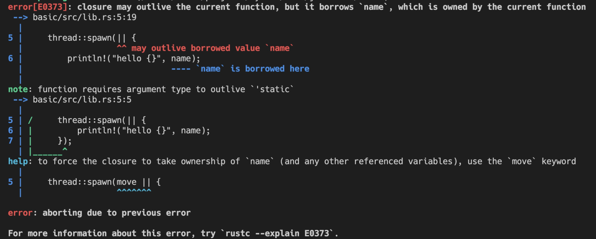
这种程度的体验，一旦你适应了 Rust，就很难离得开。Rust 语言的这种极致用户体验不仅仅反映在编译器上，整个语言的工具链包括 rustup、cargo 等，都是如此简单易用、善解人意。
其次，众所周知的优异性能和强大的表现力，让 Rust 在很多场合都能够施展拳脚。
截止 2021 年，主流的互联网公司都把 Rust 纳入主力语言，比如开发操作系统 Redox/Fuchsia、高性能网络 Tokio、应用的高并发后端 TiKV，甚至客户端软件本身（飞书）。我们欣喜地看到，Rust 除了在其传统的系统开发领域，如操作系统、设备驱动、嵌入式等方向高歌猛进之外，还在服务端高性能、高并发场景遍地开花。
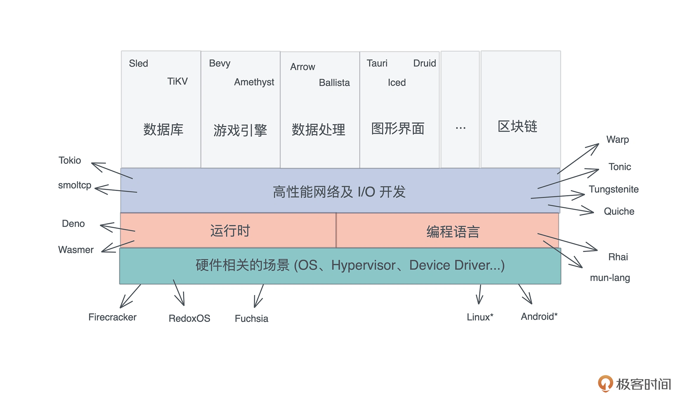
最近两年，几乎每隔一段时间我们就能听到很多知名互联网企业用 Rust 重构其技术栈的消息。比如 Dropbox 用 Rust 重写文件同步引擎、Discord 用 Rust 重写其状态服务。其实，这些公司都是业务层面驱动自然使用到 Rust 的。
比如 Discord 原先使用 Golang 的状态服务，一来会消耗大量的内存，二来在高峰期时不时会因为垃圾回收导致巨大的延迟，痛定思痛后，他们选用 Rust 重写。按照 Discord 的官方说法，Rust 除了带来性能上的提升外，还让随着产品迭代进行的代码重构变得举重若轻。
Along with performance, Rust has many advantages for an engineering team. For example, its type safety and borrow checker make it very easy to refactor code as product requirements change or new learnings about the language are discovered. Also, the ecosystem and tooling are excellent and have a significant amount of momentum behind them.
最后，是我自己的使用感觉，Rust 会越用越享受。以我个人的开发经验看，很多语言你越深入使用或者越广泛使用，就越会有“怒其不争”的感觉，因为要么掣肘很多，无法施展；要么繁文缛节太多，在性能和简洁之间很难二选一。
而我在使用 Rust 的时候，这样的情况很少见。操作简单的 bit 、处理大容量的 parquet、直面 CPU 乱序指令的 atomics，乃至像 Golang 一样高级封装的 channel，Rust 及其生态都应有尽有，让你想做什么的时候不至于“拔剑四顾心茫然”。
学习 Rust 的难点
在体验了 Rust 的强大和美妙后，2019 年，我开办了一系列讲座向我当时的团队普及 Rust，以便于处理 Elixir 难以处理的计算密集型的任务。但在这个过程中，我也深深地感受到把 Rust 的核心思想教给有经验开发者的艰辛。
Rust 被公认是很难学的语言，学习曲线很陡峭。
作为一门有着自己独特思想的语言，Rust 采百家之长，从 C++ 学习并强化了 move 语义和 RAII，从 Cyclone 借鉴和发展了生命周期，从 Haskell 吸收了函数式编程和类型系统等。
所以如果你想从其他语言迁移到 Rust，必须要经过一段时期的思维转换（Paradigm Shift）。
从命令式（imperative）编程语言转换到函数式（functional）编程语言、从变量的可变性（mutable）迁移到不可变性（immutable）、从弱类型语言迁移到强类型语言，以及从手工或者自动内存管理到通过生命周期来管理内存，难度是多重叠加。
而 Rust 中最大的思维转换就是变量的所有权和生命周期，这是几乎所有编程语言都未曾涉及的领域。
但是你一旦拿下这个难点，其他的知识点就是所有权和生命周期概念在不同领域的具体使用，比如，所有权和生命周期如何跟类型系统结合起来保证并发安全、生命周期标注如何参与到泛型编程中等等。
学习过程中，在所有权和生命周期之外，语言背景不同的工程师也会有不同难点，你可以重点学习：
- C 开发者，难点是类型系统和泛型编程；
- C++ 开发者，难点主要在类型系统；
- Python/Ruby/JavaScript 开发者，难点在并发处理、类型系统及泛型编程；
- Java 开发者，难点在异步处理和并发安全的理解上；
- Swift 开发者，几乎没有额外的难点，深入理解 Rust 异步处理即可。
只要迈过这段艰难的思维转换期，你就会明白，Rust 确实是一门从内到外透着迷人光芒的语言。
从语言的内核来看，它重塑了我们对一些基本概念的理解。比如 Rust 清晰地定义了变量在一个作用域下的生命周期，让开发者在摒弃垃圾回收（GC）这样的内存和性能杀手的前提下，还能够无需关心手动内存管理，让内存安全和高性能二者兼得。
从语言的外观来看，它使用起来感觉很像 Python/TypeScript 这样的高级语言，表达能力一流，但性能丝毫不输于 C/C++，从而让表达力和高性能二者兼得。
这种集表达力、高性能、内存安全于一身的体验，让 Rust 在 1.0 发布后不久就一路高飞猛进，从 16 年起，连续六年成为 Stack Overflow 用户评选出来的最受喜爱的语言。
如何学好 Rust？
我认为，任何语言的学习离不开精准学习 + 刻意练习。
所谓精准学习，就是深挖一个个高大上的表层知识点，回归底层基础知识的本原，再使用类比、联想等方法，打通涉及的基础知识；然后从底层设计往表层实现，一层层构建知识体系，这样“撒一层土，夯实，再撒一层”，让你对知识点理解得更透彻、掌握得牢固。
比如 Rust 中的所有权和生命周期，很多同学说自己看书或者看其他资料，这部分都学得云里雾里的，即便深入逐一理解了几条基本规则，也依旧似懂非懂。
但我们进一步思考“值在内存中的访问规则”，最后回归到堆和栈这些最基础的软件开发的概念，重新认识堆栈上的值的存储方式和生命周期之后，再一层层往上，我们就会越学越明白。
这就是回归本原的重要性，也就是常说的第一性原理：回归事物最基础的条件，将其拆分成基本要素解构分析，来探索要解决的问题。
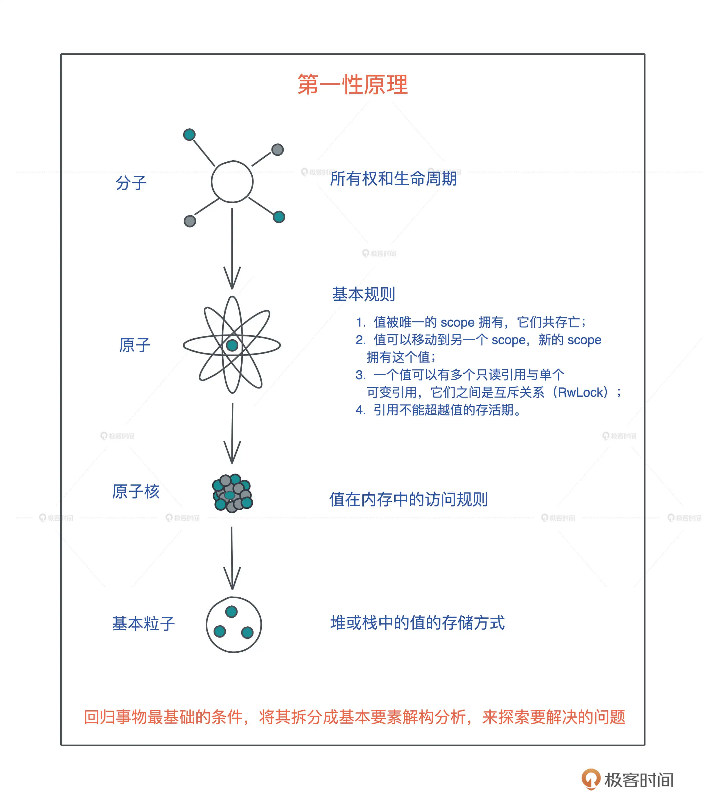
精准学习之后，我们就需要刻意练习了。刻意练习，就是用精巧设计的例子，通过练习进一步巩固学到的知识，并且在这个过程中尝试发现学习过程中的不自知问题，让自己从“我不知道我不知道”走向“我知道我不知道”，最终能够在下一个循环中弥补知识的漏洞。
这个过程就像子思在《中庸》里谈治学的方法：博学之，审问之，慎思之，明辨之，笃行之。我们学习就要这样，学了没有学会绝不罢休，不断在学习 - 构建 - 反思这个循环中提升自己。Rust 的学习，也是如此。
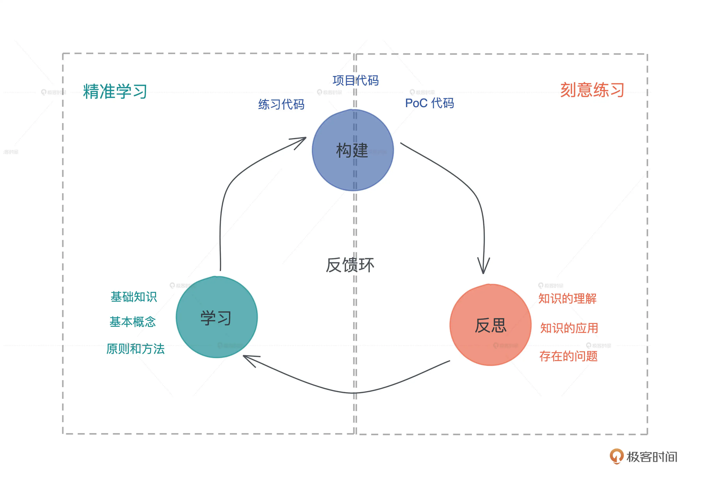
根据这种学习思路，在这个专栏里，我会带着你循序渐进地探索 Rust 的基本概念和知识、开发的原则和方法，力求掌握 Rust 开发的精髓；同时，每一部分内容，都用一个或多个实操项目帮你巩固知识、查漏补缺。
具体来看，整个专栏会分成五个模块：
- 前置知识篇
在正式学习 Rust 之前，先来回顾一下软件开发的基础概念：堆、栈、函数、闭包、虚表、泛型、同步和异步等。你要知道，想要学好任意一门编程语言，首先要吃透涉及的概念，因为编程语言，不过是这些概念的具体表述和载体。
- 基础知识篇
我们会先来一个 get hands dirty 周，从写代码中直观感受 Rust 到底魅力在哪里，能怎么用，体会编程的快乐。
然后回归理性，深入浅出地探讨 Rust 变量的所有权和生命周期，并对比几种主流的内存管理方式，包括，Rust 的内存管理方式、C 的手工管理、Java 的 GC、Swift 的 ARC 。之后围绕着所有权和生命周期，来讨论 Rust 的几大语言特性：函数式编程特性、类型系统、泛型编程以及错误处理。
- 进阶篇
Pascal 之父，图灵奖得主尼古拉斯·沃斯（Niklaus Wirth）有一个著名的公式：算法 + 数据结构 = 程序。想随心所欲地使用 Rust 为你的系统构建数据结构，深度掌握类型系统必不可少。
在 Rust 里，你可以使用 Trait 做接口设计、使用泛型做编译期多态、使用 Trait Object 做运行时多态。在你的代码里用好 Trait 和泛型，可以非常高效地解决复杂的问题。
随后我们会介绍 unsafe rust，不要被这个名字吓到。所谓 unsafe，不过是把 Rust 编译器在编译器做的严格检查退步成为 C++ 的样子，由开发者自己为其所撰写的代码的正确性做担保。
最后我们还会讲到 FFI，这是 Rust 和其它语言互通操作的桥梁。掌握好 FFI，你就可以用 Rust 为你的 Python/JavaScript/Elixir/Swift 等主力语言在关键路径上提供更高的性能，也能很方便地引入 Rust 生态中特定的库。
- 并发篇
从没有一门语言像 Rust 这样，在提供如此广博的并发原语支持的前提下，还能保证并发安全，所以 Rust 敢自称无畏并发（Fearless Concurrency）。在并发篇，我带你从 atomics 一路向上，历经 Mutex、Semaphore、Channel，直至 actor model。其他语言中被标榜为实践典范的并发手段，在 Rust 这里，只不过是一种并发工具。
Rust 还有目前最优秀的异步处理模型，我相信假以时日，这种用状态机巧妙实现零成本抽象的异步处理机制，必然会在更多新涌现出来的语言中被采用。
在并发处理这个领域，Rust 就像天秤座圣衣，刀枪剑戟斧钺钩叉，十八般兵器都提供给你，让你用最合适的工具解决最合适的问题。
- 实战篇
掌握一门语言的特性，能应用这些特性，写出解决一些小问题的代码，算是初窥门径，就像在游泳池里练习冲浪，想真正把语言融会贯通，还要靠大风大浪中的磨炼。在这篇中，我们会学习如何把 Rust 应用在生产环境中、如何使用 Rust 的编程思想解决实际问题，最后谈谈如何用 Rust 构建复杂的软件系统。
整个专栏，我会把内容尽量写得通俗易懂，并把各个知识点类比到不同的语言中，力求让你理解 Rust 繁多概念背后的设计逻辑。每一讲我都会画出重点，理清知识脉络，再通过一个个循序渐进的实操项目，让你把各个知识点融会贯通。
我衷心希望，通过这个专栏的学习，你可以从基本概念出发，一步步跨过下图的愚昧之巅，越过绝望之谷，向着永续之原进发！通过一定的努力，最终自己也可以用 Rust 构建各种各样的系统，让自己职业生涯中多一门面向未来的利器。
我非常希望你能坚持学下去，和我一直走到最后一讲。这中间，你如果有想不明白的地方，可以先多思考多琢磨，如果还有困惑，欢迎你在留言区问我。
在具体写代码的时候，你可以多举一反三，不必局限于我给的例子，可以想想工作生活中的产品场景，思考如何用 Rust 来实现。
每讲的思考题，也希望你尽量完成，记录分享你的分析步骤和思路。有需要进一步总结提炼的知识点，你也可以记录下来，与我与其他学友分享。毕竟，大物理学家费曼总结过他的学习方法，评价和分享 / 教授给别人是非常重要的步骤，能让你进一步巩固自己学到的知识和技能。
如果想找找参考思路，也可以看我在 GitHub 上的思考题答案点拨，之后文章里的代码也都整理到这里了，依赖相应版本都会更新（另外，课程里的图片都是用 excalidraw 绘制的）。
最后，你可以自己立个 Flag，哪怕只是在留言区打卡你的学习天数或者 Rust 代码行数，我相信都是会有效果的。3 个月后，我们再来一起验收。
总之，让我们携手，为自己交付 “Rust 开发” 这个大技能，让 Rust 成为你的下一门主力语言！
参考资料
-
配合课程使用：陈天的 geektime repo、官方的 Rust book、微软推出的一系列 Rust 培训 Beginner’s Series to: Rust、英文书 Programming Rust 查漏补缺
-
学完课程后进阶学习：官方的 Rust 死灵书（The Rustonomicon）、每月一期的 Rust 语言开源杂志、 Jon Gjengset 的 YouTube 频道、张汉东的《Rust 编程之道》、B 站上陈天的“喜欢历史的程序君”合集。
-
社区动态：博客 This week in Rust 、公众号 Rust 语言中文社区、 公众号 Rust 碎碎念
-
如果你对这个专栏怎么学还有疑惑，欢迎围观几个同学的学习方法和经历，在课程目录最后的“学习锦囊”系列，听听课代表们怎么说，相互借鉴，共同进步。直达链接也贴在这里：学习锦囊（一）、学习锦囊（二）、学习锦囊（三）确认放弃笔记？放弃后所记笔记将不保留。新功能上线，你的历史笔记已初始化为私密笔记，是否一键批量公开？批量公开的笔记不会为你同步至部落公开同步至部落取消完成0/2000划线笔记复制65
01｜内存：值放堆上还是放栈上，这是一个问题
你是不是已经迫不及待想要了解 Rust 了，但是别着急，我们不会按常规直接开始介绍语法，而会先来回顾那些你平时认为非常基础的知识，比如说内存、函数。
提到基础知识，你是不是已经有点提不起兴趣了，这些东西我都知道，何必浪费时间再学一次呢？其实不然，这些年我接触过的资深工程师里，基础知识没学透，工作多年了，还得回来补课的大有人在。
以最基础的内存为例，很多人其实并没有搞懂什么时候数据应该放在栈上，什么时候应该在堆上，直到工作中实际出现问题了，才意识到数据的存放方式居然会严重影响并发安全，无奈回头重新补基础，时间精力的耗费都很大。
其实作为开发者，我们一辈子会经历很多工具、框架和语言，但是这些东西无论怎么变，底层逻辑都是不变的。
所以今天我们得回头重新思考，编程中那些耳熟能详却又似懂非懂的基础概念，搞清楚底层逻辑。而且这些概念，对我们后面学习和理解 Rust 中的知识点非常重要，之后，我们也会根据需要再穿插深入讲解。
代码中最基本的概念是变量和值，而存放它们的地方是内存，所以我们就从内存开始。
内存
我们的程序无时无刻不在跟内存打交道。在下面这个把 “hello world!” 赋值给 s 的简单语句中，就跟只读数据段（RODATA）、堆、栈分别有深度交互：
#![allow(unused)] fn main() { let s = "hello world".to_string(); }
你可以使用 Rust playground 里这个代码片段 感受一下字符串的内存使用情况。
首先，“hello world” 作为一个字符串常量（string literal），在编译时被存入可执行文件的 .RODATA 段（GCC）或者 .RDATA 段（VC++），然后在程序加载时，获得一个固定的内存地址。
当执行 “hello world”.to_string() 时，在堆上，一块新的内存被分配出来，并把 “hello world” 逐个字节拷贝过去。
当我们把堆上的数据赋值给 s 时，s 作为分配在栈上的一个变量，它需要知道堆上内存的地址，另外由于堆上的数据大小不确定且可以增长，我们还需要知道它的长度以及它现在有多大。
最终，为了表述这个字符串，我们使用了三个 word：第一个表示指针、第二个表示字符串的当前长度（11）、第三个表示这片内存的总容量（11）。在 64 位系统下，三个 word 是 24 个字节。
你也可以看下图，更直观一些：
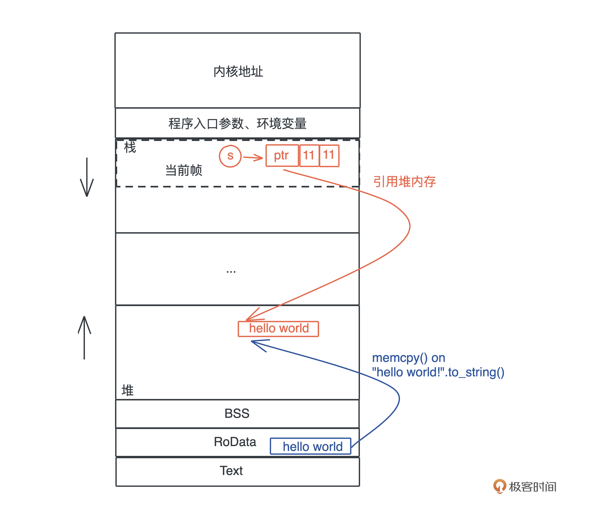
刚才提到字符串的内容在堆上，而指向字符串的指针等信息在栈上，现在就是检验你内存基础知识是否扎实的时候了：数据什么时候可以放在栈上，什么时候需要放在堆上呢？
这个问题，很多使用自动内存管理语言比如 Java/Python 的开发者，可能有一些模糊的印象或者规则：
- 基本类型（primitive type）存储在栈上，对象存储在堆上；
- 少量数据存储在栈上，大量的数据存储在堆上。
这些虽然对，但并没有抓到实质。如果你在工作中只背规则套公式，一遇到特殊情况就容易懵，但是如果明白公式背后的推导逻辑，即使忘了，也很快能通过简单思考找到答案，所以接下来我们深挖堆和栈的设计原理，看看它们到底是如何工作的。
栈
栈是程序运行的基础。每当一个函数被调用时，一块连续的内存就会在栈顶被分配出来，这块内存被称为帧（frame）。
我们知道，栈是自顶向下增长的，一个程序的调用栈最底部，除去入口帧（entry frame），就是 main() 函数对应的帧，而随着 main() 函数一层层调用，栈会一层层扩展；调用结束，栈又会一层层回溯，把内存释放回去。
在调用的过程中，一个新的帧会分配足够的空间存储寄存器的上下文。在函数里使用到的通用寄存器会在栈保存一个副本，当这个函数调用结束，通过副本，可以恢复出原本的寄存器的上下文，就像什么都没有经历一样。此外，函数所需要使用到的局部变量，也都会在帧分配的时候被预留出来。
整个过程你可以再看看这张图辅助理解：
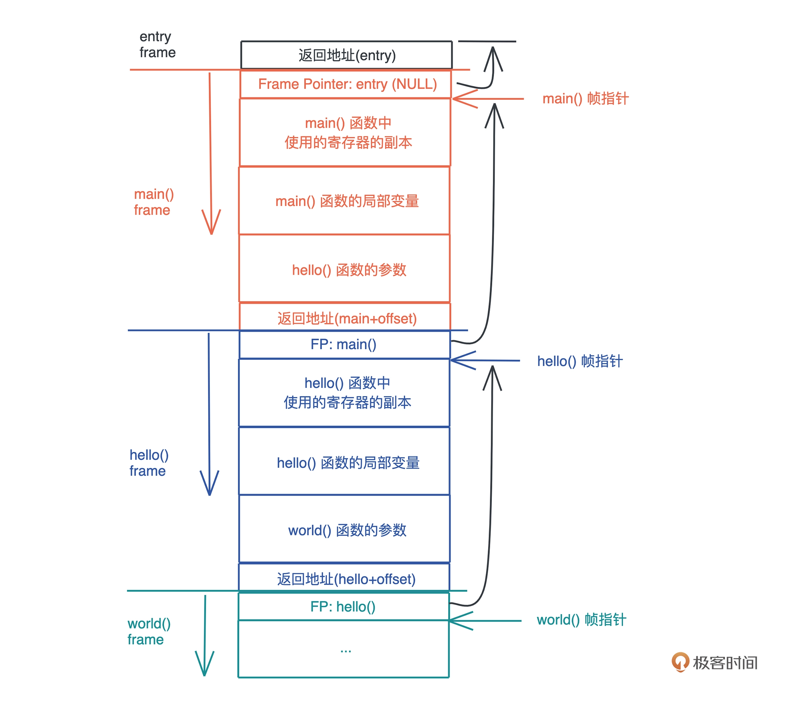
那一个函数运行时，怎么确定究竟需要多大的帧呢？
这要归功于编译器。在编译并优化代码的时候，一个函数就是一个最小的编译单元。
在这个函数里，编译器得知道要用到哪些寄存器、栈上要放哪些局部变量，而这些都要在编译时确定。所以编译器就需要明确每个局部变量的大小，以便于预留空间。
这下我们就明白了：在编译时，一切无法确定大小或者大小可以改变的数据，都无法安全地放在栈上，最好放在堆上。比如一个函数，参数是字符串：
#![allow(unused)] fn main() { fn say_name(name: String) {} // 调用 say_name("Lindsey".to_string()); say_name("Rosie".to_string()); }
字符串的数据结构，在编译时大小不确定，运行时执行到具体的代码才知道大小。比如上面的代码，“Lindsey” 和 “Rosie” 的长度不一样，say_name() 函数只有在运行的时候，才知道参数的具体的长度。
所以，我们无法把字符串本身放在栈上，只能先将其放在堆上，然后在栈上分配对应的指针，引用堆上的内存。
放栈上的问题
从刚才的图中你也可以直观看到，栈上的内存分配是非常高效的。只需要改动栈指针（stack pointer），就可以预留相应的空间；把栈指针改动回来，预留的空间又会被释放掉。预留和释放只是动动寄存器，不涉及额外计算、不涉及系统调用，因而效率很高。
所以理论上说，只要可能，我们应该把变量分配到栈上，这样可以达到更好的运行速度。
那为什么在实际工作中，我们又要避免把大量的数据分配在栈上呢？
这主要是考虑到调用栈的大小，避免栈溢出（stack overflow）。一旦当前程序的调用栈超出了系统允许的最大栈空间，无法创建新的帧，来运行下一个要执行的函数，就会发生栈溢出，这时程序会被系统终止，产生崩溃信息。
过大的栈内存分配是导致栈溢出的原因之一，更广为人知的原因是递归函数没有妥善终止。一个递归函数会不断调用自己，每次调用都会形成一个新的帧，如果递归函数无法终止，最终就会导致栈溢出。
堆
栈虽然使用起来很高效，但它的局限也显而易见。当我们需要动态大小的内存时，只能使用堆，比如可变长度的数组、列表、哈希表、字典，它们都分配在堆上。
堆上分配内存时，一般都会预留一些空间，这是最佳实践。
比如你创建一个列表，并往里添加两个值：
#![allow(unused)] fn main() { let mut arr = Vec::new(); arr.push(1); arr.push(2); }
这个列表实际预留的大小是 4，并不等于其长度 2。这是因为堆上内存分配会使用 libc 提供的 malloc() 函数，其内部会请求操作系统的系统调用，来分配内存。系统调用的代价是昂贵的，所以我们要避免频繁地 malloc()。
对上面的代码来说，如果我们需要多少就分配多少，那列表每次新增值，都要新分配一大块的内存，先拷贝已有数据，再把新的值添加进去，最后释放旧的内存，这样效率很低。所以在堆内存分配时，预留的空间大小 4 会大于需要的实际大小 2 。
除了动态大小的内存需要被分配到堆上外，动态生命周期的内存也需要分配到堆上。
上文中我们讲到，栈上的内存在函数调用结束之后，所使用的帧被回收，相关变量对应的内存也都被回收待用。所以栈上内存的生命周期是不受开发者控制的，并且局限在当前调用栈。
而堆上分配出来的每一块内存需要显式地释放，这就使堆上内存有更加灵活的生命周期，可以在不同的调用栈之间共享数据。
如下图所示：
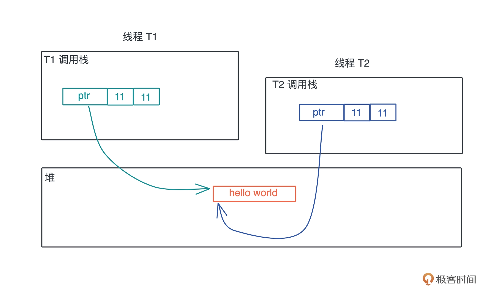
放堆上的问题
然而，堆内存的这种灵活性也给内存管理带来很多挑战。
如果手工管理堆内存的话，堆上内存分配后忘记释放，就会造成内存泄漏。一旦有内存泄漏，程序运行得越久，就越吃内存，最终会因为占满内存而被操作系统终止运行。
如果堆上内存被多个线程的调用栈引用，该内存的改动要特别小心，需要加锁以独占访问，来避免潜在的问题。比如说，一个线程在遍历列表，而另一个线程在释放列表中的某一项，就可能访问野指针，导致堆越界（heap out of bounds）。而堆越界是第一大内存安全问题。
如果堆上内存被释放，但栈上指向堆上内存的相应指针没有被清空，就有可能发生使用已释放内存（use after free）的情况，程序轻则崩溃，重则隐含安全隐患。根据微软安全反应中心（MSRC）的研究，这是第二大内存安全问题。
GC、ARC 如何解决
为了避免堆内存手动管理造成的这些问题，以 Java 为首的一系列编程语言，采用了追踪式垃圾回收（Tracing GC）的方法，来自动管理堆内存。这种方式通过定期标记（mark）找出不再被引用的对象，然后将其清理（sweep）掉，来自动管理内存，减轻开发者的负担。
而 ObjC 和 Swift 则走了另一条路：自动引用计数（Automatic Reference Counting）。在编译时，它为每个函数插入 retain/release 语句来自动维护堆上对象的引用计数，当引用计数为零的时候，release 语句就释放对象。
从效率上来说，GC 在内存分配和释放上无需额外操作，而 ARC 添加了大量的额外代码处理引用计数，所以 GC 效率更高，吞吐量（throughput）更大。
但是，GC 释放内存的时机是不确定的，释放时引发的 STW（Stop The World），也会导致代码执行的延迟（latency）不确定。所以一般携带 GC 的编程语言，不适于做嵌入式系统或者实时系统。当然，Erlang VM 是个例外， 它把 GC 的粒度下放到每个 process，最大程度解决了 STW 的问题。
我们使用 Android 手机偶尔感觉卡顿，而 iOS 手机却运行丝滑，大多是这个原因。而且做后端服务时，API 或者服务响应时间的 p99（99th percentile）也会受到 GC STW 的影响而表现不佳。
说句题外话，上面说的 GC 性能和我们常说的性能，涵义不太一样。常说的性能是吞吐量和延迟的总体感知，和实际性能是有差异的，GC 和 ARC 就是典型例子。GC 分配和释放内存的效率和吞吐量要比 ARC 高，但因为偶尔的高延迟，导致被感知的性能比较差，所以会给人一种 GC 不如 ARC 性能好的感觉。
小结
今天我们重新回顾基础概念，分析了栈和堆的特点。
对于存入栈上的值，它的大小在编译期就需要确定。栈上存储的变量生命周期在当前调用栈的作用域内，无法跨调用栈引用。
堆可以存入大小未知或者动态伸缩的数据类型。堆上存储的变量，其生命周期从分配后开始，一直到释放时才结束，因此堆上的变量允许在多个调用栈之间引用。但也导致堆变量的管理非常复杂，手工管理会引发很多内存安全性问题，而自动管理，无论是 GC 还是 ARC，都有性能损耗和其它问题。
一句话对比总结就是：栈上存放的数据是静态的，固定大小，固定生命周期；堆上存放的数据是动态的，不固定大小，不固定生命周期。
下一讲我们会讨论基础概念，比如值和类型、指针和引用、函数、方法和闭包、接口和虚表、并发与并行、同步和异步，以及 Promise/async/await ，这些我们学习 Rust 或者任何语言都会接触到。
思考题
最后，是课后练习题环节，欢迎在留言区分享你的思考。
-
如果有一个数据结构需要在多个线程中访问，可以把它放在栈上吗？为什么？
-
可以使用指针引用栈上的某个变量吗？如果可以，在什么情况下可以这么做？
02｜串讲：编程开发中，那些你需要掌握的基本概念
上一讲我们了解了内存的基本运作方式，简单回顾一下：栈上存放的数据是静态的，固定大小，固定生命周期；堆上存放的数据是动态的，不固定大小，不固定生命周期。
今天我们来继续梳理，编程开发中经常接触到的其它基本概念。需要掌握的小概念点比较多，为了方便你学习，我把它们分为四大类来讲解：数据（值和类型、指针和引用）、代码（函数、方法、闭包、接口和虚表）、运行方式（并发并行、同步异步和 Promise / async / await ），以及编程范式（泛型编程）。
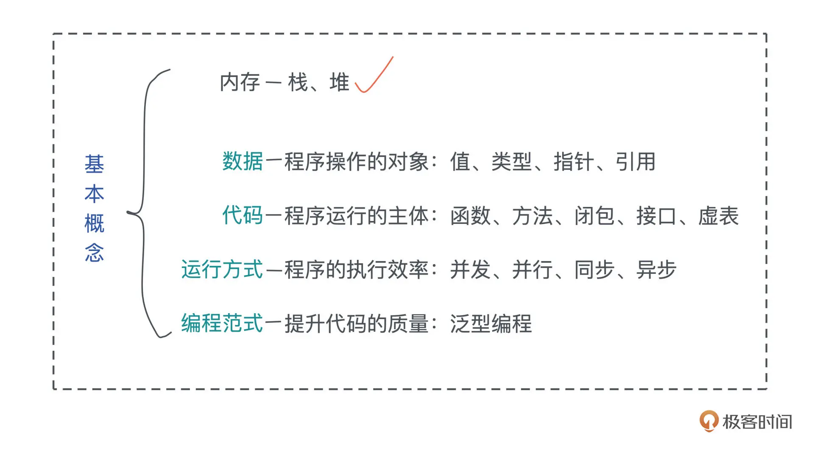
希望通过重温这些概念，你能够夯实软件开发领域的基础知识，这对你后续理解 Rust 里面的很多难点至关重要，比如所有权、动态分派、并发处理等。
好了，废话不多说，我们马上开始。
数据
数据是程序操作的对象，不进行数据处理的程序是没有意义的，我们先来重温和数据有关的概念，包括值和类型、指针和引用。
值和类型
严谨地说，类型是对值的区分，它包含了值在内存中的长度、对齐以及值可以进行的操作等信息。一个值是符合一个特定类型的数据的某个实体。比如 64u8，它是 u8 类型，对应一个字节大小、取值范围在 0～255 的某个整数实体，这个实体是 64。
值以类型规定的表达方式（representation）被存储成一组字节流进行访问。比如 64，存储在内存中的表现形式是 0x40，或者 0b 0100 0000。
这里你要注意，值是无法脱离具体的类型讨论的。同样是内存中的一个字节 0x40，如果其类型是 ASCII char，那么其含义就不是 64，而是 @ 符号。
不管是强类型的语言还是弱类型的语言，语言内部都有其类型的具体表述。一般而言，编程语言的类型可以分为原生类型和组合类型两大类。
原生类型（primitive type）是编程语言提供的最基础的数据类型。比如字符、整数、浮点数、布尔值、数组（array）、元组（tuple）、指针、引用、函数、闭包等。所有原生类型的大小都是固定的，因此它们可以被分配到栈上。
组合类型（composite type）或者说复合类型，是指由一组原生类型和其它类型组合而成的类型。组合类型也可以细分为两类：
-
结构体（structure type）：多个类型组合在一起共同表达一个值的复杂数据结构。比如 Person 结构体，内部包含 name、age、email 等信息。用代数数据类型（algebraic data type）的说法，结构体是 product type。
-
标签联合（tagged union）：也叫不相交并集（disjoint union），可以存储一组不同但固定的类型中的某个类型的对象，具体是哪个类型由其标签决定。比如 Haskell 里的 Maybe 类型，或者 Swift 中的 Optional 就是标签联合。用代数数据类型的说法，标签联合是 sum type。
另外不少语言不支持标签联合，只取其标签部分，提供了枚举类型（enumerate）。枚举是标签联合的子类型，但功能比较弱，无法表达复杂的结构。
看定义可能不是太好理解，你可以看这张图：
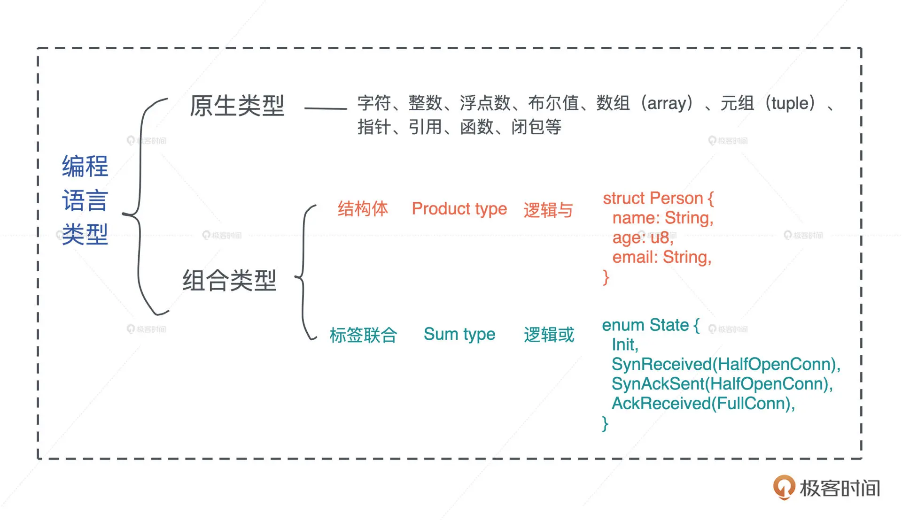
指针和引用
在内存中，一个值被存储到内存中的某个位置，这个位置对应一个内存地址。而指针是一个持有内存地址的值，可以通过解引用（dereference）来访问它指向的内存地址，理论上可以解引用到任意数据类型。
引用（reference）和指针非常类似，不同的是，引用的解引用访问是受限的，它只能解引用到它引用数据的类型，不能用作它用。比如，指向 42u8 这个值的一个引用，它解引用的时候只能使用 u8 数据类型。
所以，指针的使用限制更少，但也会带来更多的危害。如果没有用正确的类型解引用一个指针，那么会引发各种各样的内存问题，造成系统崩溃或者潜在的安全漏洞。
刚刚讲过，指针和引用是原生类型，它们可以分配在栈上。
根据指向数据的不同，某些引用除了需要一个指针指向内存地址之外，还需要内存地址的长度和其它信息。
如上一讲提到的指向 “hello world” 字符串的指针，还包含字符串长度和字符串的容量，一共使用了 3 个 word，在 64 位 CPU 下占用 24 个字节，这样比正常指针携带更多信息的指针，我们称之为胖指针（fat pointer）。很多数据结构的引用，内部都是由胖指针实现的。
代码
数据是程序操作的对象，而代码是程序运行的主体，也是我们开发者把物理世界中的需求转换成数字世界中逻辑的载体。我们会讨论函数和闭包、接口和虚表。
函数、方法和闭包
函数是编程语言的基本要素，它是对完成某个功能的一组相关语句和表达式的封装。函数也是对代码中重复行为的抽象。在现代编程语言中，函数往往是一等公民，这意味着函数可以作为参数传递，或者作为返回值返回，也可以作为复合类型中的一个组成部分。
在面向对象的编程语言中，在类或者对象中定义的函数，被称为方法（method）。方法往往和对象的指针发生关系，比如 Python 对象的 self 引用，或者 Java 对象的 this 引用。
而闭包是将函数，或者说代码和其环境一起存储的一种数据结构。闭包引用的上下文中的自由变量，会被捕获到闭包的结构中，成为闭包类型的一部分。
一般来说，如果一门编程语言，其函数是一等公民，那么它必然会支持闭包（closure），因为函数作为返回值往往需要返回一个闭包。
你可以看这张图辅助理解，图中展示了一个闭包对上下文环境的捕获。
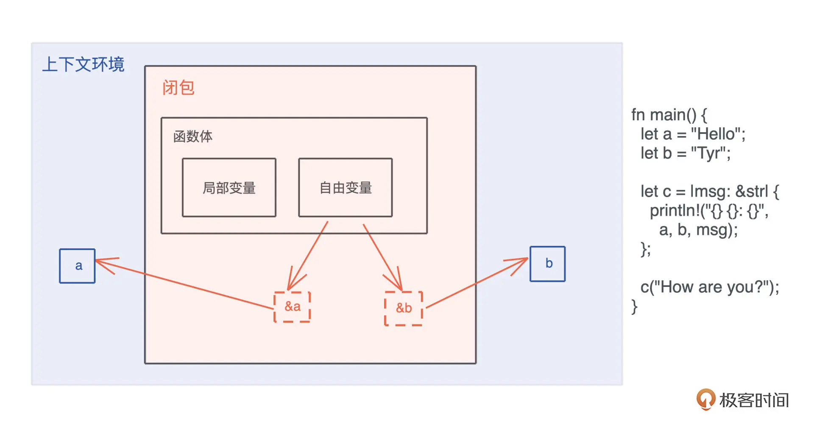
你可以尝试运行这段代码：
fn main() { let a = "Hello"; let b = "Tyr"; let c = |msg: &str| { println!("{} {}: {}", a, b, msg); }; c("How are you?"); }
接口和虚表
接口是一个软件系统开发的核心部分，它反映了系统的设计者对系统的抽象理解。作为一个抽象层，接口将使用方和实现方隔离开来，使两者不直接有依赖关系，大大提高了复用性和扩展性。
很多编程语言都有接口的概念，允许开发者面向接口设计，比如 Java 的 interface、Elixir 的 behaviour、Swift 的 protocol 和 Rust 的 trait。
比如说，在 HTTP 中，Request/Response 的服务处理模型其实就是一个典型的接口，我们只需要按照服务接口定义出不同输入下，从 Request 到 Response 具体该如何映射，通过这个接口，系统就可以在合适的场景下，把符合要求的 Request 分派给我们的服务。
面向接口的设计是软件开发中的重要能力，而 Rust 尤其重视接口的能力。在后续讲到 Trait 的章节，我们会详细介绍如何用 Trait 来进行接口设计。
当我们在运行期使用接口来引用具体类型的时候，代码就具备了运行时多态的能力。但是，在运行时，一旦使用了关于接口的引用，变量原本的类型被抹去，我们无法单纯从一个指针分析出这个引用具备什么样的能力。
因此，在生成这个引用的时候，我们需要构建胖指针，除了指向数据本身外，还需要指向一张涵盖了这个接口所支持方法的列表。这个列表，就是我们熟知的虚表（virtual table）。
下图展示了一个 Vec 数据在运行期被抹去类型，生成一个指向 Write 接口引用的过程：
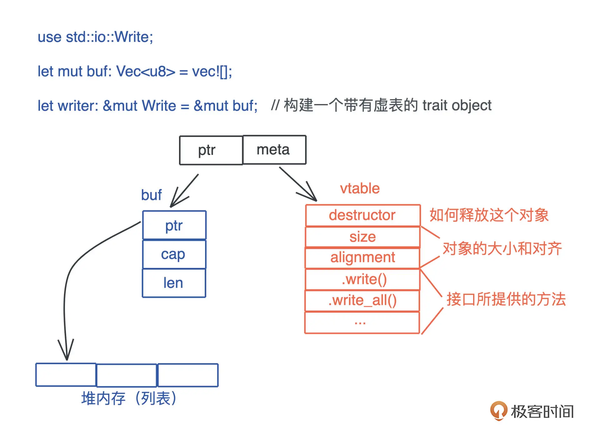
由于虚表记录了数据能够执行的接口，所以在运行期，我们想对一个接口有不同实现，可以根据上下文动态分派。
比如我想为一个编辑器的 Formatter 接口实现不同语言的格式化工具。我们可以在编辑器加载时，把所有支持的语言和其格式化工具放入一个哈希表中，哈希表的 key 为语言类型，value 为每种格式化工具 Formatter 接口的引用。这样，当用户在编辑器打开某个文件的时候，我们可以根据文件类型，找到对应 Formatter 的引用，来进行格式化操作。
运行方式
程序在加载后，代码以何种方式运行，往往决定着程序的执行效率。所以我们接下来讨论并发、并行、同步、异步以及异步中的几个重要概念 Promise/async/await。
并发（concurrency）与并行（parallel）
并发和并行是软件开发中经常遇到的概念。
并发是同时与多件事情打交道的能力，比如系统可以在任务 1 做到一定程度后，保存该任务的上下文，挂起并切换到任务 2，然后过段时间再切换回任务 1。
并行是同时处理多件事情的手段。也就是说，任务 1 和任务 2 可以在同一个时间片下工作，无需上下文切换。下图很好地阐释了二者的区别：
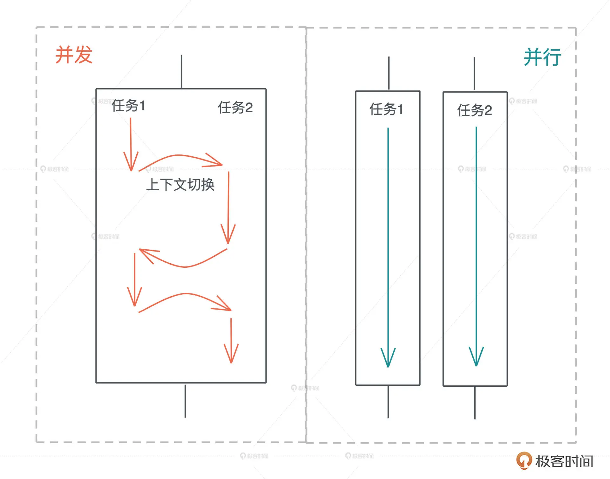
并发是一种能力，而并行是一种手段。当我们的系统拥有了并发的能力后，代码如果跑在多个 CPU core 上，就可以并行运行。所以我们平时都谈论高并发处理，而不会说高并行处理。
很多拥有高并发处理能力的编程语言，会在用户程序中嵌入一个 M:N 的调度器，把 M 个并发任务，合理地分配在 N 个 CPU core 上并行运行，让程序的吞吐量达到最大。
同步和异步
同步是指一个任务开始执行后，后续的操作会阻塞，直到这个任务结束。在软件中，我们大部分的代码都是同步操作，比如 CPU，只有流水线中的前一条指令执行完成，才会执行下一条指令。一个函数 A 先后调用函数 B 和 C，也会执行完 B 之后才执行 C。
同步执行保证了代码的因果关系（causality），是程序正确性的保证。
然而在遭遇 I/O 处理时，高效 CPU 指令和低效 I/O 之间的巨大鸿沟，成为了软件的性能杀手。下图对比了 CPU、内存、I/O 设备、和网络的延迟：
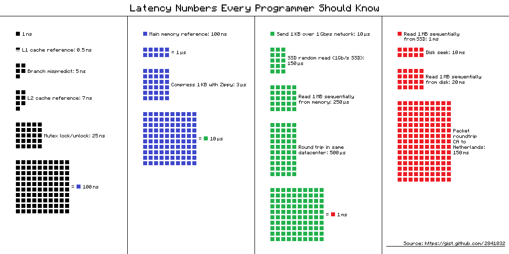
我们可以看到和内存访问相比，I/O 操作的访问速度低了两个数量级，一旦遇到 I/O 操作，CPU 就只能闲置来等待 I/O 设备运行完毕。因此，操作系统为应用程序提供了异步 I/O，让应用可以在当前 I/O 处理完毕之前，将 CPU 时间用作其它任务的处理。
所以，异步是指一个任务开始执行后，与它没有因果关系的其它任务可以正常执行，不必等待前一个任务结束。
在异步操作里，异步处理完成后的结果，一般用 Promise 来保存，它是一个对象，用来描述在未来的某个时刻才能获得的结果的值，一般存在三个状态；
- 初始状态，Promise 还未运行；
- 等待（pending）状态，Promise 已运行，但还未结束；
- 结束状态， Promise 成功解析出一个值，或者执行失败。
如果你对 Promise 这个词不太熟悉，在很多支持异步的语言中，Promise 也叫 Future / Delay / Deferred 等。除了这个词以外，我们也经常看到 async/await 这对关键字。
一般而言，async 定义了一个可以并发执行的任务，而 await 则触发这个任务并发执行。大多数语言中，async/await 是一个语法糖（syntactic sugar），它使用状态机将 Promise 包装起来，让异步调用的使用感觉和同步调用非常类似，也让代码更容易阅读。
编程范式
为了在不断迭代时，更好地维护代码，我们还会引入各种各样的编程范式，来提升代码的质量。所以最后来谈谈泛型编程。
如果你来自于弱类型语言，如 C / Python / JavaScript，那泛型编程是你需要重点掌握的概念和技能。泛型编程包含两个层面，数据结构的泛型和使用泛型结构代码的泛型化。
数据结构的泛型
首先是数据结构的泛型，它也往往被称为参数化类型或者参数多态，比如下面这个数据结构：
#![allow(unused)] fn main() { struct Connection<S> { io: S, state: State, } }
它有一个参数 S，其内部的域 io 的类型是 S，S 具体的类型只有在使用 Connection 的上下文中才得到绑定。
你可以把参数化数据结构理解成一个产生类型的函数，在“调用”时，它接受若干个使用了具体类型的参数，返回携带这些类型的类型。比如我们为 S 提供 TcpStream 这个类型，那么就产生 Connection这个类型，其中 io 的类型是 TcpStream。
这里你可能会疑惑，如果 S 可以是任意类型，那我们怎么知道 S 有什么行为？如果我们要调用 io.send() 发送数据，编译器怎么知道 S 包含这个方法？
这是个好问题，我们需要用接口对 S 进行约束。所以我们经常看到，支持泛型编程的语言，会提供强大的接口编程能力，在后续的课程中在讲 Rust 的 trait 时，我会再详细探讨这个问题。
数据结构的泛型是一种高级抽象，就像我们人类用数字抽象具体事物的数量，又发明了代数来进一步抽象具体的数字一样。它带来的好处是我们可以延迟绑定，让数据结构的通用性更强，适用场合更广阔；也大大减少了代码的重复，提高了可维护性。
代码的泛型化
泛型编程的另一个层面是使用泛型结构后代码的泛型化。当我们使用泛型结构编写代码时，相关的代码也需要额外的抽象。
这里用我们熟悉的二分查找的例子解释会比较清楚：
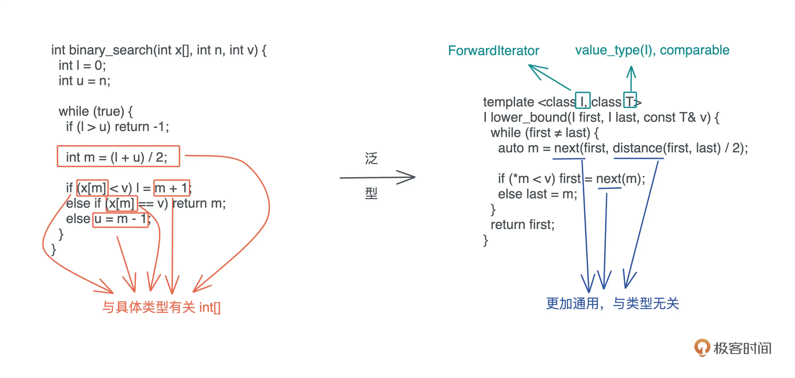
左边用 C 撰写的二分查找，标记的几处操作隐含着和 int[] 有关，所以如果对不同的数据类型做二分查找，实现也要跟着改变。右边 C++ 的实现，对这些地方做了抽象，让我们可以用同一套代码二分查找迭代器（iterator）的数据类型。
同样的，这样的代码可以在更广阔的场合使用，更简洁容易维护。
小结
今天我们讨论了四大类基础概念：数据、代码、运行方式和编程范式。
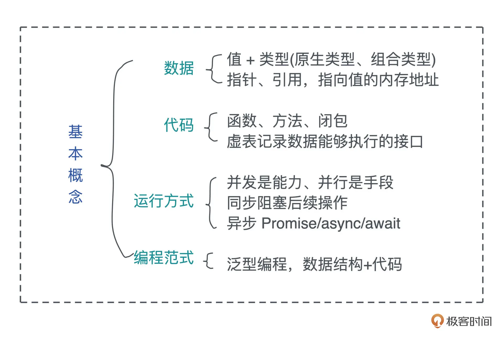
值无法离开类型单独讨论，类型一般分为原生类型和组合类型。指针和引用都指向值的内存地址，只不过二者在解引用时的行为不一样。引用只能解引用到原来的数据类型，而指针没有这个限制，然而，不受约束的指针解引用，会带来内存安全方面的问题。
函数是代码中重复行为的抽象，方法是对象内部定义的函数，而闭包是一种特殊的函数，它会捕获函数体内使用到的上下文中的自由变量，作为闭包成员的一部分。
而接口将调用者和实现者隔离开，大大促进了代码的复用和扩展。面向接口编程可以让系统变得灵活，当使用接口去引用具体的类型时，我们就需要虚表来辅助运行时代码的执行。有了虚表，我们可以很方便地进行动态分派，它是运行时多态的基础。
在代码的运行方式中，并发是并行的基础，是同时与多个任务打交道的能力；并行是并发的体现，是同时处理多个任务的手段。同步阻塞后续操作，异步允许后续操作。被广泛用于异步操作的 Promise 代表未来某个时刻会得到的结果，async/await 是 Promise 的封装，一般用状态机来实现。
泛型编程通过参数化让数据结构像函数一样延迟绑定，提升其通用性，类型的参数可以用接口约束，使类型满足一定的行为，同时，在使用泛型结构时，我们的代码也需要更高的抽象度。
这些基础概念，这对于后续理解 Rust 的很多概念至关重要。如果你对某些概念还是有些模糊，务必留言，我们可以进一步讨论。
思考题
（现在我们还没有讲到 Rust 的具体语法，所以你可以用自己平时常用的语言来思考这几道题，巩固你对基本概念的理解）
-
有一个指向某个函数的指针，如果将其解引用成一个列表，然后往列表中插入一个元素，请问会发生什么？（对比不同语言，看看这种操作是否允许，如果允许会发生什么）
-
要构造一个数据结构 Shape，可以是 Rectangle、 Circle 或是 Triangle，这三种结构见如下代码。请问 Shape 类型该用什么数据结构实现？怎么实现？
#![allow(unused)] fn main() { struct Rectangle { a: f64, b: f64, } struct Circle { r: f64, } struct Triangle { a: f64, b: f64, c: f64, } }
- 对于上面的三种结构，如果我们要定义一个接口，可以计算周长和面积，怎么计算？欢迎
03｜初窥门径：从你的第一个Rust程序开始！
学语言最好的捷径就是把自己置身于语言的环境中，而且我们程序员讲究 “get hands dirty”，直接从代码开始学能带来最直观的体验。所以从这一讲开始，你就要在电脑上设置好 Rust 环境了。
今天会讲到很多 Rust 的基础知识，我都精心构造了代码案例来帮你理解，非常推荐你自己一行行敲入这些代码，边写边思考为什么这么写，然后在运行时体会执行和输出的过程。如果遇到了问题，你也可以点击运行。
Rust 安装起来非常方便，你可以用 rustup.rs 中给出的方法，根据你的操作系统进行安装。
如果是国内环境，需要先加上镜像配置：
export RUSTUP_DIST_SERVER=https://mirrors.sjtug.sjtu.edu.cn/rust-static
export RUSTUP_UPDATE_ROOT=https://mirrors.sjtug.sjtu.edu.cn/rust-static/rustup
然后安装。比如在 UNIX 系统下，可以直接运行：
curl --proto '=https' --tlsv1.2 -sSf https://sh.rustup.rs | sh
这会在你的系统上安装 Rust 工具链，之后，你就可以在本地用 cargo new 新建 Rust 项目、尝试 Rust 功能。动起手来，试试用 Rust 写你的第一个 hello world 程序吧！
fn main() { println!("Hello world!"); }
你可以使用任何编辑器来撰写 Rust 代码，我个人偏爱 VS Code，因为它免费，功能强大且速度很快。在 VS Code 下我为 Rust 安装了一些插件，下面是我的安装顺序，你可以参考：
- rust-analyzer：它会实时编译和分析你的 Rust 代码，提示代码中的错误，并对类型进行标注。你也可以使用官方的 Rust 插件取代。
- rust syntax：为代码提供语法高亮。
- crates：帮助你分析当前项目的依赖是否是最新的版本。better toml：Rust 使用 toml 做项目的配置管理。
- better toml 可以帮你语法高亮，并展示 toml 文件中的错误。
- rust test lens：可以帮你快速运行某个 Rust 测试。
- Tabnine：基于 AI 的自动补全，可以帮助你更快地撰写代码。
第一个实用的 Rust 程序
现在你已经有工具和环境了，尽管我们目前一行 Rust 语法都还没有介绍，但这不妨碍我们写一个稍稍有用的 Rust 程序，跑一遍之后，你对 Rust 的基本功能、关键语法和生态系统就基本心中有数了，我们再来详细分析。
一定要动起手来，跟着课程节奏一行一行敲，如果碰到不太理解的知识点，不要担心，今天只需要你先把代码运行起来，我们后面会循序渐进学习到各个难点的。
另外，我也建议你用自己常用的编程语言做同样的需求，和 Rust 对比一下，看简洁程度、代码可读性孰优孰劣。
这个程序的需求很简单，通过 HTTP 请求 Rust 官网首页，然后把获得的 HTML 转换成 Markdown 保存起来。我相信用 JavaScript 或者 Python，只要选好相关的依赖，这也就是十多行代码的样子。我们看看用 Rust 怎么处理。
首先，我们用 cargo new scrape_url 生成一个新项目。默认情况下，这条命令会生成一个可执行项目 scrape_url，入口在 src/main.rs。我们在 Cargo.toml 文件里，加入如下的依赖：
[dependencies]
reqwest = { version = "0.11", features = ["blocking"] }
html2md = "0.2"
Cargo.toml 是 Rust 项目的配置管理文件，它符合 toml 的语法。我们为这个项目添加了两个依赖：reqwest 和 html2md。reqwest 是一个 HTTP 客户端，它的使用方式和 Python 下的 request 类似；html2md 顾名思义，把 HTML 文本转换成 Markdown。
接下来，在 src/main.rs 里，我们为 main() 函数加入以下代码：
use std::fs; fn main() { let url = "https://www.rust-lang.org/"; let output = "rust.md"; println!("Fetching url: {}", url); let body = reqwest::blocking::get(url).unwrap().text().unwrap(); println!("Converting html to markdown..."); let md = html2md::parse_html(&body); fs::write(output, md.as_bytes()).unwrap(); println!("Converted markdown has been saved in {}.", output); }
保存后，在命令行下，进入这个项目的目录，运行 cargo run，在一段略微漫长的编译后，程序开始运行，在命令行下，你会看到如下的输出：
Fetching url: https://www.rust-lang.org/
Converting html to markdown...
Converted markdown has been saved in rust.md.
并且，在当前目录下，一个 rust.md 文件被创建出来了。打开一看，其内容就是 Rust 官网主页的内容。
Bingo！我们第一个 Rust 程序运行成功！
从这段并不长的代码中，我们可以感受到 Rust 的一些基本特点：
首先，Rust 使用名为 cargo 的工具来管理项目，它类似 Node.js 的 npm、Golang 的 go，用来做依赖管理以及开发过程中的任务管理，比如编译、运行、测试、代码格式化等等。
其次，Rust 的整体语法偏 C/C++ 风格。函数体用花括号 {} 包裹，表达式之间用分号 ; 分隔，访问结构体的成员函数或者变量使用点 . 运算符，而访问命名空间（namespace）或者对象的静态函数使用双冒号 :: 运算符。如果要简化对命名空间内部的函数或者数据类型的引用，可以使用 use 关键字，比如 use std::fs。此外，可执行体的入口函数是 main()。
另外，你也很容易看到，Rust 虽然是一门强类型语言，但编译器支持类型推导，这使得写代码时的直观感受和写脚本语言差不多。
很多不习惯类型推导的开发者，觉得这会降低代码的可读性，因为可能需要根据上下文才知道当前变量是什么类型。不过没关系，如果你在编辑器中使用了 rust-analyzer 插件，变量的类型会自动提示出来：
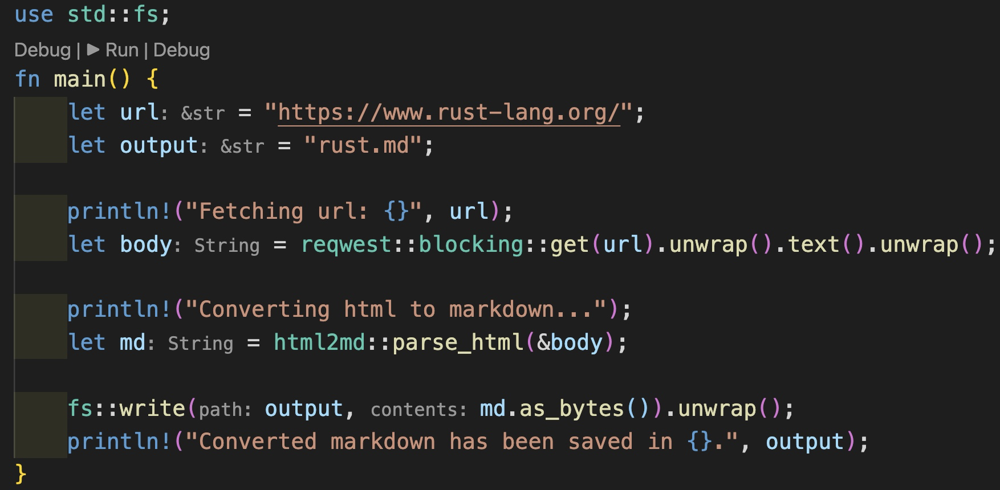
最后，Rust 支持宏编程，很多基础的功能比如 println!() 都被封装成一个宏，便于开发者写出简洁的代码。
这里例子没有展现出来，但 Rust 还具备的其它特点有：
- Rust 的变量默认是不可变的，如果要修改变量的值，需要显式地使用 mut 关键字。
- 除了 let / static / const / fn 等少数语句外，Rust 绝大多数代码都是表达式（expression）。所以 if / while / for / loop 都会返回一个值，函数最后一个表达式就是函数的返回值，这和函数式编程语言一致。
- Rust 支持面向接口编程和泛型编程。
- Rust 有非常丰富的数据类型和强大的标准库。
- Rust 有非常丰富的控制流程，包括模式匹配（pattern match）。
第一个实用的 Rust 程序就运行成功了，不知道你现在是不是有点迟疑，这些我现在都不太懂怎么办，是不是得先去把这些都掌握了才能继续学？不要迟疑，跟着继续学，后面都会讲到。
接下来，为了快速入门 Rust，我们一起梳理 Rust 开发的基本内容。
这部分涉及的知识在各个编程语言中都大同小异，略微枯燥，但是这一讲是我们后续学习的基础，建议你每段示例代码都写一下，运行一下，并且和自己熟悉的语言对比来加深印象。
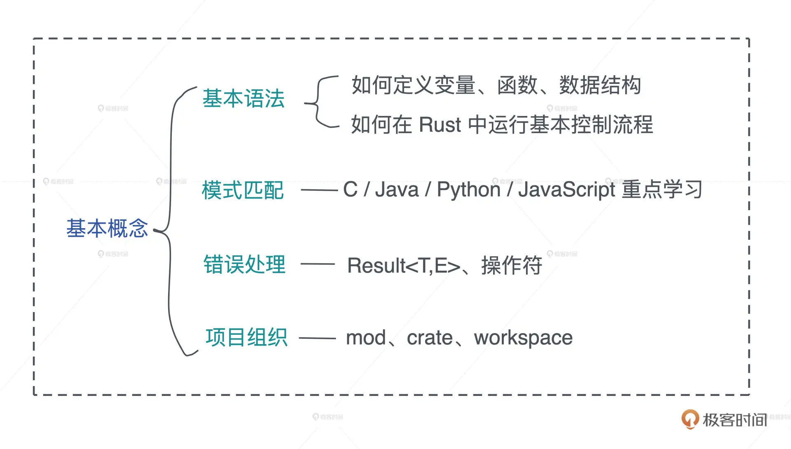
基本语法和基础数据类型
首先我们看在 Rust 下，我们如何定义变量、函数和数据结构。
变量和函数
前面说到，Rust 支持类型推导，在编译器能够推导类型的情况下，变量类型一般可以省略，但常量（const）和静态变量（static）必须声明类型。
定义变量的时候，根据需要，你可以添加 mut 关键字让变量具备可变性。默认变量不可变是一个很重要的特性，它符合最小权限原则（Principle of Least Privilege），有助于我们写出健壮且正确的代码。当你使用 mut 却没有修改变量，Rust 编译期会友好地报警，提示你移除不必要的 mut。
在 Rust 下，函数是一等公民，可以作为参数或者返回值。我们来看一个函数作为参数的例子：
fn apply(value: i32, f: fn(i32) -> i32) -> i32 { f(value) } fn square(value: i32) -> i32 { value * value } fn cube(value: i32) -> i32 { value * value * value } fn main() { println!("apply square: {}", apply(2, square)); println!("apply cube: {}", apply(2, cube)); }
这里 fn(i32) -> i32 是 apply 函数第二个参数的类型，它表明接受一个函数作为参数，这个传入的函数必须是：参数只有一个，且类型为 i32，返回值类型也是 i32。
Rust 函数参数的类型和返回值的类型都必须显式定义，如果没有返回值可以省略，返回 unit。函数内部如果提前返回，需要用 return 关键字，否则最后一个表达式就是其返回值。如果最后一个表达式后添加了; 分号，隐含其返回值为 unit。你可以看这个例子:
fn pi() -> f64 { 3.1415926 } fn not_pi() { 3.1415926; } fn main() { let is_pi = pi(); let is_unit1 = not_pi(); let is_unit2 = { pi(); }; println!("is_pi: {:?}, is_unit1: {:?}, is_unit2: {:?}", is_pi, is_unit1, is_unit2); }
数据结构
了解了函数如何定义后，我们来看看 Rust 下如何定义数据结构。
数据结构是程序的核心组成部分，在对复杂的问题进行建模时，我们就要自定义数据结构。Rust 非常强大，可以用 struct 定义结构体，用 enum 定义标签联合体（tagged union），还可以像 Python 一样随手定义元组（tuple）类型。
比如我们可以这样定义一个聊天服务的数据结构:
#[derive(Debug)] enum Gender { Unspecified = 0, Female = 1, Male = 2, } #[derive(Debug, Copy, Clone)] struct UserId(u64); #[derive(Debug, Copy, Clone)] struct TopicId(u64); #[derive(Debug)] struct User { id: UserId, name: String, gender: Gender, } #[derive(Debug)] struct Topic { id: TopicId, name: String, owner: UserId, } // 定义聊天室中可能发生的事件 #[derive(Debug)] enum Event { Join((UserId, TopicId)), Leave((UserId, TopicId)), Message((UserId, TopicId, String)), } fn main() { let alice = User { id: UserId(1), name: "Alice".into(), gender: Gender::Female }; let bob = User { id: UserId(2), name: "Bob".into(), gender: Gender::Male }; let topic = Topic { id: TopicId(1), name: "rust".into(), owner: UserId(1) }; let event1 = Event::Join((alice.id, topic.id)); let event2 = Event::Join((bob.id, topic.id)); let event3 = Event::Message((alice.id, topic.id, "Hello world!".into())); println!("event1: {:?}, event2: {:?}, event3: {:?}", event1, event2, event3); }
简单解释一下：
- Gender：一个枚举类型，在 Rust 下，使用 enum 可以定义类似 C 的枚举类型
- UserId/TopicId ：struct 的特殊形式，称为元组结构体。它的域都是匿名的，可以用索引访问，适用于简单的结构体。
- User/Topic：标准的结构体，可以把任何类型组合在结构体里使用。
- Event：标准的标签联合体，它定义了三种事件：Join、Leave、Message。每种事件都有自己的数据结构。
在定义数据结构的时候，我们一般会加入修饰，为数据结构引入一些额外的行为。在 Rust 里，数据的行为通过 trait 来定义，后续我们会详细介绍 trait，你现在可以暂时认为 trait 定义了数据结构可以实现的接口，类似 Java 中的 interface。
一般我们用 impl 关键字为数据结构实现 trait，但 Rust 贴心地提供了派生宏（derive macro），可以大大简化一些标准接口的定义，比如 #[derive(Debug)] 为数据结构实现了 Debug trait，提供了 debug 能力，这样可以通过 {:?}，用 println! 打印出来。
在定义 UserId / TopicId 时我们还用到了 Copy / Clone 两个派生宏，Clone 让数据结构可以被复制，而 Copy 则让数据结构可以在参数传递的时候自动按字节拷贝。在下一讲所有权中，我会具体讲什么时候需要 Copy。
简单总结一下 Rust 定义变量、函数和数据结构：
控制流程
程序的基本控制流程分为以下几种，我们应该都很熟悉了，重点看如何在 Rust 中运行。
顺序执行就是一行行代码往下执行。在执行的过程中，遇到函数，会发生函数调用。函数调用是代码在执行过程中，调用另一个函数，跳入其上下文执行，直到返回。
Rust 的循环和大部分语言都一致，支持死循环 loop、条件循环 while，以及对迭代器的循环 for。循环可以通过 break 提前终止，或者 continue 来跳到下一轮循环。
满足某个条件时会跳转， Rust 支持分支跳转、模式匹配、错误跳转和异步跳转。
- 分支跳转就是我们熟悉的 if/else； Rust 的模式匹配可以通过匹配表达式或者值的某部分的内容，来进行分支跳转； 在错误跳转中，当调用的函数返回错误时，Rust 会提前终止当前函数的执行，向上一层返回错误。 在 Rust 的异步跳转中 ，当 async 函数执行 await 时，程序当前上下文可能被阻塞，执行流程会跳转到另一个异步任务执行，直至 await 不再阻塞。
我们通过斐波那契数列，使用 if 和 loop / while / for 这几种循环，来实现程序的基本控制流程:
fn fib_loop(n: u8) { let mut a = 1; let mut b = 1; let mut i = 2u8; loop { let c = a + b; a = b; b = c; i += 1; println!("next val is {}", b); if i >= n { break; } } } fn fib_while(n: u8) { let (mut a, mut b, mut i) = (1, 1, 2); while i < n { let c = a + b; a = b; b = c; i += 1; println!("next val is {}", b); } } fn fib_for(n: u8) { let (mut a, mut b) = (1, 1); for _i in 2..n { let c = a + b; a = b; b = c; println!("next val is {}", b); } } fn main() { let n = 10; fib_loop(n); fib_while(n); fib_for(n); }
这里需要指出的是，Rust 的 for 循环可以用于任何实现了 IntoIterator trait 的数据结构。
在执行过程中，IntoIterator 会生成一个迭代器，for 循环不断从迭代器中取值，直到迭代器返回 None 为止。因而，for 循环实际上只是一个语法糖，编译器会将其展开使用 loop 循环对迭代器进行循环访问，直至返回 None。
在 fib_for 函数中，我们还看到 2…n 这样的语法，想必 Python 开发者一眼就能明白这是 Range 操作，2…n 包含 2<= x < n 的所有值。和 Python 一样，在 Rust 中，你也可以省略 Range 的下标或者上标，比如：
#![allow(unused)] fn main() { let arr = [1, 2, 3]; assert_eq!(arr[..], [1, 2, 3]); assert_eq!(arr[0..=1], [1, 2]); }
和 Python 不同的是，Range 不支持负数，所以你不能使用 arr[1..-1] 这样的代码。这是因为，Range 的下标上标都是 usize 类型，不能为负数。
下表是 Rust 主要控制流程的一个总结：
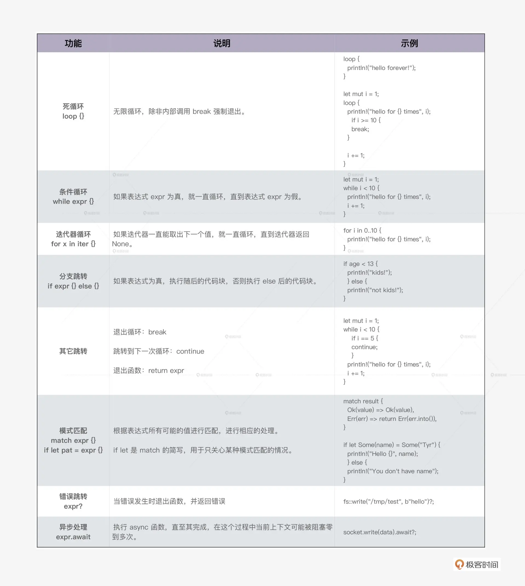
模式匹配
Rust 的模式匹配吸取了函数式编程语言的优点，强大优雅且效率很高。它可以用于 struct / enum 中匹配部分或者全部内容，比如上文中我们设计的数据结构 Event，可以这样匹配:
#![allow(unused)] fn main() { fn process_event(event: &Event) { match event { Event::Join((uid, _tid)) => println!("user {:?} joined", uid), Event::Leave((uid, tid)) => println!("user {:?} left {:?}", uid, tid), Event::Message((_, _, msg)) => println!("broadcast: {}", msg), } } }
从代码中我们可以看到，可以直接对 enum 内层的数据进行匹配并赋值，这比很多只支持简单模式匹配的语言，例如 JavaScript 、Python ，可以省出好几行代码。
除了使用 match 关键字做模式匹配外，我们还可以用 if let / while let 做简单的匹配，如果上面的代码我们只关心 Event::Message，可以这么写:
#![allow(unused)] fn main() { fn process_message(event: &Event) { if let Event::Message((_, _, msg)) = event { println!("broadcast: {}", msg); } } }
Rust 的模式匹配是一个很重要的语言特性，被广泛应用在状态机处理、消息处理和错误处理中，如果你之前使用的语言是 C / Java / Python / JavaScript ，没有强大的模式匹配支持，要好好练习这一块。
错误处理
Rust 没有沿用 C++/Java 等诸多前辈使用的异常处理方式，而是借鉴 Haskell，把错误封装在 Result 类型中，同时提供了 ? 操作符来传播错误，方便开发。Result 类型是一个泛型数据结构，T 代表成功执行返回的结果类型，E 代表错误类型。
今天开始的 scrape_url 项目，其实里面很多调用已经使用了 Result 类型，这里我再展示一下代码，不过我们使用了 unwrap() 方法，只关心成功返回的结果，如果出错，整个程序会终止。
use std::fs; fn main() { let url = "https://www.rust-lang.org/"; let output = "rust.md"; println!("Fetching url: {}", url); let body = reqwest::blocking::get(url).unwrap().text().unwrap(); println!("Converting html to markdown..."); let md = html2md::parse_html(&body); fs::write(output, md.as_bytes()).unwrap(); println!("Converted markdown has been saved in {}.", output); }
如果想让错误传播，可以把所有的 unwrap() 换成 ? 操作符，并让 main() 函数返回一个 Result，如下所示：
use std::fs; // main 函数现在返回一个 Result fn main() -> Result<(), Box<dyn std::error::Error>> { let url = "https://www.rust-lang.org/"; let output = "rust.md"; println!("Fetching url: {}", url); let body = reqwest::blocking::get(url)?.text()?; println!("Converting html to markdown..."); let md = html2md::parse_html(&body); fs::write(output, md.as_bytes())?; println!("Converted markdown has been saved in {}.", output); Ok(()) }
关于错误处理我们先讲这么多，之后我们会单开一讲，对比其他语言，来详细学习 Rust 的错误处理。
Rust 项目的组织
当 Rust 代码规模越来越大时，我们就无法用单一文件承载代码了，需要多个文件甚至多个目录协同工作，这时我们可以用 mod 来组织代码。
具体做法是：在项目的入口文件 lib.rs / main.rs 里，用 mod 来声明要加载的其它代码文件。如果模块内容比较多，可以放在一个目录下，在该目录下放一个 mod.rs 引入该模块的其它文件。这个文件，和 Python 的 __init__.py 有异曲同工之妙。这样处理之后，就可以用 mod + 目录名引入这个模块了，如下图所示：
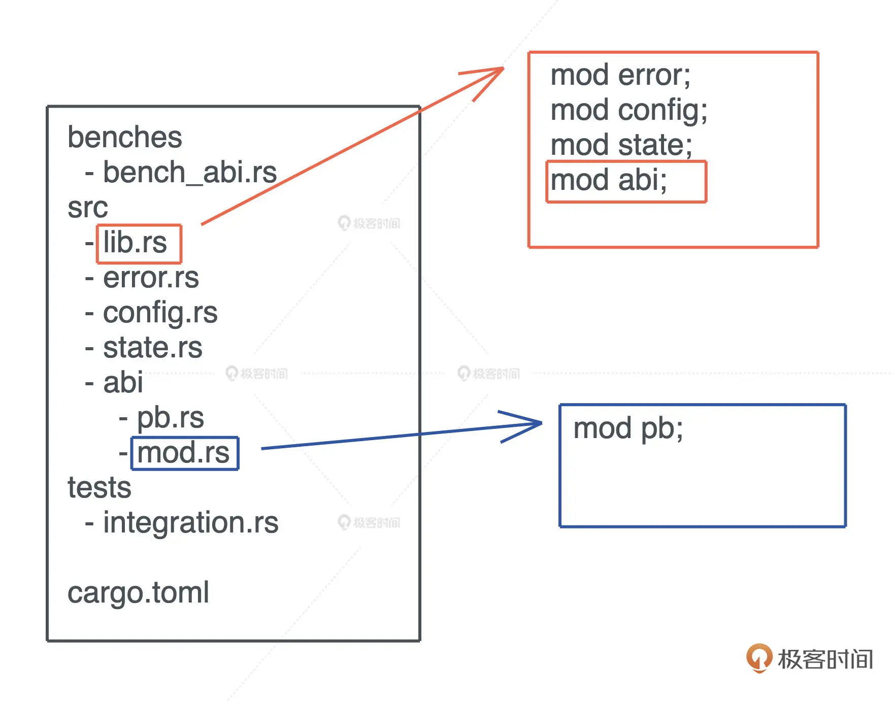
在 Rust 里，一个项目也被称为一个 crate。crate 可以是可执行项目，也可以是一个库，我们可以用 cargo new -- lib 来创建一个库。当 crate 里的代码改变时，这个 crate 需要被重新编译。
在一个 crate 下，除了项目的源代码，单元测试和集成测试的代码也会放在 crate 里。
Rust 的单元测试一般放在和被测代码相同的文件中，使用条件编译 #[cfg(test)] 来确保测试代码只在测试环境下编译。以下是一个单元测试的例子：
#![allow(unused)] fn main() { #[cfg(test)] mod tests { #[test] fn it_works() { assert_eq!(2 + 2, 4); } } }
集成测试一般放在 tests 目录下，和 src 平行。和单元测试不同，集成测试只能测试 crate 下的公开接口，编译时编译成单独的可执行文件。
在 crate 下，如果要运行测试用例，可以使用 cargo test。
当代码规模继续增长，把所有代码放在一个 crate 里就不是一个好主意了，因为任何代码的修改都会导致这个 crate 重新编译，这样效率不高。我们可以使用 workspace。
一个 workspace 可以包含一到多个 crates，当代码发生改变时，只有涉及的 crates 才需要重新编译。当我们要构建一个 workspace 时，需要先在某个目录下生成一个如图所示的 Cargo.toml，包含 workspace 里所有的 crates，然后可以 cargo new 生成对应的 crates：
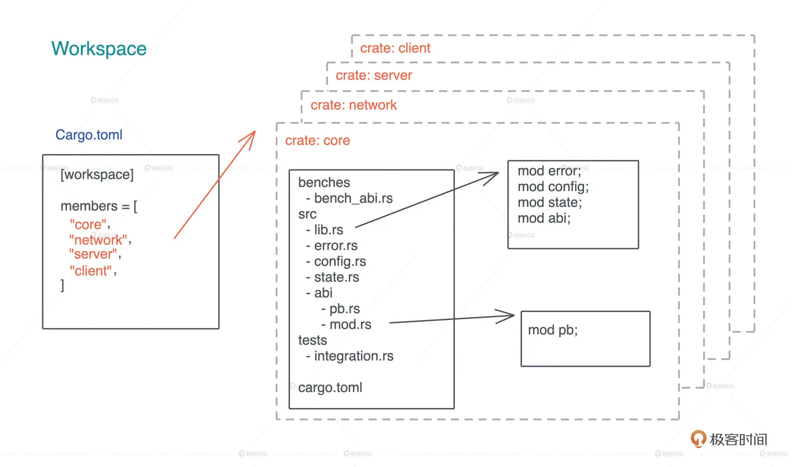
crate 和 workspace 还有一些更高级的用法，在后面遇到的时候会具体讲解。如果你有兴趣，也可以先阅读 Rust book 第 14 章了解更多的知识。
小结
我们简单梳理了 Rust 的基本概念。通过 let/let mut 定义变量、用 fn 定义函数、用 struct / enum 定义复杂的数据结构，也学习了 Rust 的基本的控制流程，了解了模式匹配如何运作，知道如何处理错误。
最后考虑到代码规模问题，介绍了如何使用 mod、crate 和 workspace 来组织 Rust 代码。我总结到图中你可以看看。
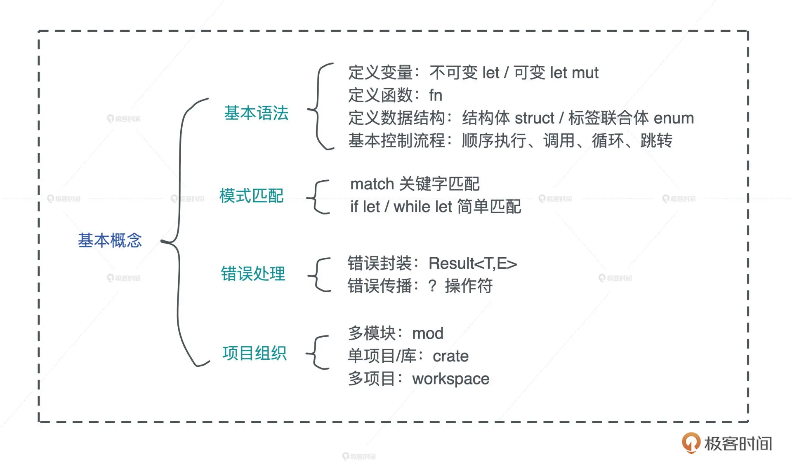
今天是让你对 Rust 形成非常基本的认识，能够开始尝试写一些简单的 Rust 项目。
你也许会惊奇，用 Rust 写类似于 scrape_url 的功能，竟然和 Python 这样的脚本语言的体验几乎一致，太简单了！
下一讲我们会继续写一写代码，从实用的小工具的编写中真实感受 Rust 的魅力。
思考题
-
在上面的斐波那契数列的代码中，你也许注意到计算数列中下一个数的代码在三个函数中不断重复。这不符合 DRY（Don’t Repeat Yourself）原则。你可以写一个函数把它抽取出来么？
-
在 scrape_url 的例子里，我们在代码中写死了要获取的 URL 和要输出的文件名，这太不灵活了。你能改进这个代码，从命令行参数中获取用户提供的信息来绑定 URL 和文件名么？类似这样：
cargo run -- https://www.rust-lang.org rust.md
提示一下，打印一下 std::env::args() 看看会发生什么？
#![allow(unused)] fn main() { for arg in std::env::args() { println!("{}", arg); } }
04｜get hands dirty：来写个实用的CLI小工具
HTTPie
为了覆盖绝大多数同学的需求，这次挑选的例子是工作中普遍会遇到的：写一个 CLI 工具，辅助我们处理各种任务。
我们就以实现 HTTPie 为例，看看用 Rust 怎么做 CLI。HTTPie 是用 Python 开发的，一个类似 cURL 但对用户更加友善的命令行工具，它可以帮助我们更好地诊断 HTTP 服务。
下图是用 HTTPie 发送了一个 post 请求的界面，你可以看到，相比 cURL，它在可用性上做了很多工作，包括对不同信息的语法高亮显示：
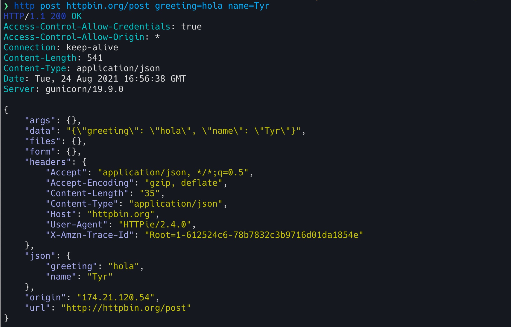
你可以先想一想，如果用你最熟悉的语言实现 HTTPie ，要怎么设计、需要用到些什么库、大概用多少行代码？如果用 Rust 的话，又大概会要多少行代码？
带着你自己的这些想法，开始动手用 Rust 构建这个工具吧！我们的目标是，用大约 200 行代码实现这个需求。
功能分析
要做一个 HTTPie 这样的工具，我们先梳理一下要实现哪些主要功能：
- 首先是做命令行解析，处理子命令和各种参数，验证用户的输入，并且将这些输入转换成我们内部能理解的参数；
- 之后根据解析好的参数，发送一个 HTTP 请求，获得响应；
- 最后用对用户友好的方式输出响应。
这个流程你可以再看下图：
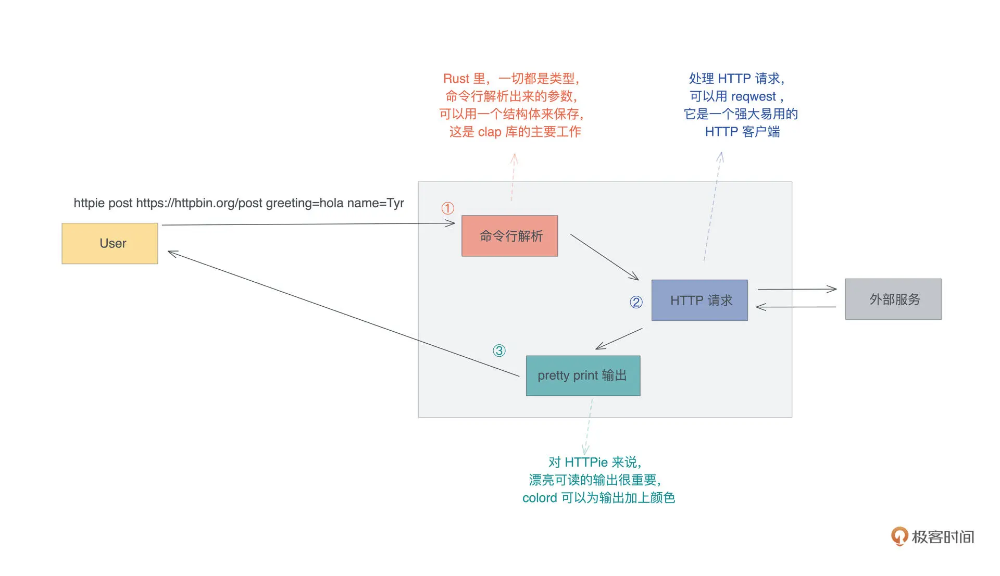
我们来看要实现这些功能对应需要用到的库：
- 对于命令行解析，Rust 有很多库可以满足这个需求，我们今天使用官方比较推荐的 clap。
- 对于 HTTP 客户端，在上一讲我们已经接触过 reqwest，我们就继续使用它，只不过我们这次尝个鲜，使用它的异步接口。
- 对于格式化输出，为了让输出像 Python 版本的 HTTPie 那样显得生动可读，我们可以引入一个命令终端多彩显示的库，这里我们选择比较简单的 colored。
- 除此之外，我们还需要一些额外的库：用 anyhow 做错误处理、用 jsonxf 格式化 JSON 响应、用 mime 处理 mime 类型，以及引入 tokio 做异步处理。
CLI 处理
好，有了基本的思路，我们来创建一个项目，名字就叫 httpie：
cargo new httpie
cd httpie
然后，用 VSCode 打开项目所在的目录，编辑 Cargo.toml 文件，添加所需要的依赖（注意：以下代码用到了 beta 版本的 crate，可能未来会有破坏性更新，如果在本地无法编译，请参考 GitHub repo 中的代码）：
[package]
name = "httpie"
version = "0.1.0"
edition = "2021"
# See more keys and their definitions at https://doc.rust-lang.org/cargo/reference/manifest.html
[[example]]
name = "cli"
[[example]]
name = "cli_verify"
[[example]]
name = "cli_get"
[dependencies]
anyhow = "1" # 错误处理
clap = { version = "3", features = ["derive"] } # 命令行解析
colored = "2" # 命令终端多彩显示
jsonxf = "1.1" # JSON pretty print 格式化
mime = "0.3" # 处理 mime 类型
# reqwest 默认使用 openssl，有些 linux 用户如果没有安装好 openssl 会无法编译，这里我改成了使用 rustls
reqwest = { version = "0.11", default-features = false, features = ["json", "rustls-tls"] } # HTTP 客户端
tokio = { version = "1", features = ["full"] } # 异步处理库
syntect = "4"
我们先在 main.rs 添加处理 CLI 相关的代码：
use clap::{AppSettings, Clap}; // 定义 HTTPie 的 CLI 的主入口，它包含若干个子命令 // 下面 /// 的注释是文档，clap 会将其作为 CLI 的帮助 /// A naive httpie implementation with Rust, can you imagine how easy it is? #[derive(Clap, Debug)] #[clap(version = "1.0", author = "Tyr Chen <tyr@chen.com>")] #[clap(setting = AppSettings::ColoredHelp)] struct Opts { #[clap(subcommand)] subcmd: SubCommand, } // 子命令分别对应不同的 HTTP 方法，目前只支持 get / post #[derive(Clap, Debug)] enum SubCommand { Get(Get), Post(Post), // 我们暂且不支持其它 HTTP 方法 } // get 子命令 /// feed get with an url and we will retrieve the response for you #[derive(Clap, Debug)] struct Get { /// HTTP 请求的 URL url: String, } // post 子命令。需要输入一个 URL，和若干个可选的 key=value，用于提供 json body /// feed post with an url and optional key=value pairs. We will post the data /// as JSON, and retrieve the response for you #[derive(Clap, Debug)] struct Post { /// HTTP 请求的 URL url: String, /// HTTP 请求的 body body: Vec<String>, } fn main() { let opts: Opts = Opts::parse(); println!("{:?}", opts); }
代码中用到了 clap 提供的宏来让 CLI 的定义变得简单，这个宏能够生成一些额外的代码帮我们处理 CLI 的解析。通过 clap ，我们只需要先用一个数据结构 T 描述 CLI 都会捕获什么数据，之后通过 T::parse() 就可以解析出各种命令行参数了。parse() 函数我们并没有定义，它是 #[derive(Clap)] 自动生成的。
目前我们定义了两个子命令，在 Rust 中子命令可以通过 enum 定义，每个子命令的参数又由它们各自的数据结构 Get 和 Post 来定义。
我们运行一下：
❯ cargo build --quiet && target/debug/httpie post httpbin.org/post a=1 b=2
Opts { subcmd: Post(Post { url: "httpbin.org/post", body: ["a=1", "b=2"] }) }
默认情况下，cargo build 编译出来的二进制，在项目根目录的 target/debug 下。可以看到，命令行解析成功，达到了我们想要的功能。
加入验证
然而，现在我们还没对用户输入做任何检验，如果有这样的输入，URL 就完全解析错误了：
❯ cargo build --quiet && target/debug/httpie post a=1 b=2
Opts { subcmd: Post(Post { url: "a=1", body: ["b=2"] }) }
所以，我们需要加入验证。输入有两项，就要做两个验证，一是验证 URL，另一个是验证 body。
首先来验证 URL 是合法的：
#![allow(unused)] fn main() { use anyhow::Result; use reqwest::Url; #[derive(Clap, Debug)] struct Get { /// HTTP 请求的 URL #[clap(parse(try_from_str = parse_url))] url: String, } fn parse_url(s: &str) -> Result<String> { // 这里我们仅仅检查一下 URL 是否合法 let _url: Url = s.parse()?; Ok(s.into()) } }
clap 允许你为每个解析出来的值添加自定义的解析函数，我们这里定义了个 parse_url 检查一下。
然后，我们要确保 body 里每一项都是 key=value 的格式。可以定义一个数据结构 KvPair 来存储这个信息，并且也自定义一个解析函数把解析的结果放入 KvPair：
#![allow(unused)] fn main() { use std::str::FromStr; use anyhow::{anyhow, Result}; #[derive(Clap, Debug)] struct Post { /// HTTP 请求的 URL #[clap(parse(try_from_str = parse_url))] url: String, /// HTTP 请求的 body #[clap(parse(try_from_str=parse_kv_pair))] body: Vec<KvPair>, } /// 命令行中的 key=value 可以通过 parse_kv_pair 解析成 KvPair 结构 #[derive(Debug)] struct KvPair { k: String, v: String, } /// 当我们实现 FromStr trait 后，可以用 str.parse() 方法将字符串解析成 KvPair impl FromStr for KvPair { type Err = anyhow::Error; fn from_str(s: &str) -> Result<Self, Self::Err> { // 使用 = 进行 split，这会得到一个迭代器 let mut split = s.split("="); let err = || anyhow!(format!("Failed to parse {}", s)); Ok(Self { // 从迭代器中取第一个结果作为 key，迭代器返回 Some(T)/None // 我们将其转换成 Ok(T)/Err(E)，然后用 ? 处理错误 k: (split.next().ok_or_else(err)?).to_string(), // 从迭代器中取第二个结果作为 value v: (split.next().ok_or_else(err)?).to_string(), }) } } /// 因为我们为 KvPair 实现了 FromStr，这里可以直接 s.parse() 得到 KvPair fn parse_kv_pair(s: &str) -> Result<KvPair> { Ok(s.parse()?) } }
这里我们实现了一个 FromStr trait，可以把满足条件的字符串转换成 KvPair。FromStr 是 Rust 标准库定义的 trait，实现它之后，就可以调用字符串的 parse() 泛型函数，很方便地处理字符串到某个类型的转换了。
这样修改完成后，我们的 CLI 就比较健壮了，可以再测试一下：
❯ cargo build --quiet
❯ target/debug/httpie post https://httpbin.org/post a=1 b
error: Invalid value for '<BODY>...': Failed to parse b
For more information try --help
❯ target/debug/httpie post abc a=1
error: Invalid value for '<URL>': relative URL without a base
For more information try --help
target/debug/httpie post https://httpbin.org/post a=1 b=2
Opts { subcmd: Post(Post { url: "https://httpbin.org/post", body: [KvPair { k: "a", v: "1" }, KvPair { k: "b", v: "2" }] }) }
Cool，我们完成了基本的验证，不过很明显可以看到，我们并没有把各种验证代码一股脑塞在主流程中，而是通过实现额外的验证函数和 trait 来完成的，这些新添加的代码，高度可复用且彼此独立，并不用修改主流程。
这非常符合软件开发的开闭原则（Open-Closed Principle）：Rust 可以通过宏、trait、泛型函数、trait object 等工具，帮助我们更容易写出结构良好、容易维护的代码。
目前你也许还不太明白这些代码的细节，但是不要担心，继续写，今天先把代码跑起来就行了，不需要你搞懂每个知识点，之后我们都会慢慢讲到的。
HTTP 请求
好，接下来我们就继续进行 HTTPie 的核心功能：HTTP 的请求处理了。我们在 main() 函数里添加处理子命令的流程：
use reqwest::{header, Client, Response, Url}; #[tokio::main] async fn main() -> Result<()> { let opts: Opts = Opts::parse(); // 生成一个 HTTP 客户端 let client = Client::new(); let result = match opts.subcmd { SubCommand::Get(ref args) => get(client, args).await?, SubCommand::Post(ref args) => post(client, args).await?, }; Ok(result) }
注意看我们把 main 函数变成了 async fn，它代表异步函数。对于 async main，我们需要使用 #[tokio::main] 宏来自动添加处理异步的运行时。
然后在 main 函数内部，我们根据子命令的类型，我们分别调用 get 和 post 函数做具体处理，这两个函数实现如下：
#![allow(unused)] fn main() { use std::{collections::HashMap, str::FromStr}; async fn get(client: Client, args: &Get) -> Result<()> { let resp = client.get(&args.url).send().await?; println!("{:?}", resp.text().await?); Ok(()) } async fn post(client: Client, args: &Post) -> Result<()> { let mut body = HashMap::new(); for pair in args.body.iter() { body.insert(&pair.k, &pair.v); } let resp = client.post(&args.url).json(&body).send().await?; println!("{:?}", resp.text().await?); Ok(()) } }
其中，我们解析出来的 KvPair 列表，需要装入一个 HashMap，然后传给 HTTP client 的 JSON 方法。这样，我们的 HTTPie 的基本功能就完成了。
不过现在打印出来的数据对用户非常不友好，我们需要进一步用不同的颜色打印 HTTP header 和 HTTP body，就像 Python 版本的 HTTPie 那样，这部分代码比较简单，我们就不详细介绍了。
最后，来看完整的代码：
use anyhow::{anyhow, Result}; use clap::{AppSettings, Clap}; use colored::*; use mime::Mime; use reqwest::{header, Client, Response, Url}; use std::{collections::HashMap, str::FromStr}; // 以下部分用于处理 CLI // 定义 HTTPie 的 CLI 的主入口，它包含若干个子命令 // 下面 /// 的注释是文档，clap 会将其作为 CLI 的帮助 /// A naive httpie implementation with Rust, can you imagine how easy it is? #[derive(Clap, Debug)] #[clap(version = "1.0", author = "Tyr Chen <tyr@chen.com>")] #[clap(setting = AppSettings::ColoredHelp)] struct Opts { #[clap(subcommand)] subcmd: SubCommand, } // 子命令分别对应不同的 HTTP 方法，目前只支持 get / post #[derive(Clap, Debug)] enum SubCommand { Get(Get), Post(Post), // 我们暂且不支持其它 HTTP 方法 } // get 子命令 /// feed get with an url and we will retrieve the response for you #[derive(Clap, Debug)] struct Get { /// HTTP 请求的 URL #[clap(parse(try_from_str = parse_url))] url: String, } // post 子命令。需要输入一个 URL，和若干个可选的 key=value，用于提供 json body /// feed post with an url and optional key=value pairs. We will post the data /// as JSON, and retrieve the response for you #[derive(Clap, Debug)] struct Post { /// HTTP 请求的 URL #[clap(parse(try_from_str = parse_url))] url: String, /// HTTP 请求的 body #[clap(parse(try_from_str=parse_kv_pair))] body: Vec<KvPair>, } /// 命令行中的 key=value 可以通过 parse_kv_pair 解析成 KvPair 结构 #[derive(Debug, PartialEq)] struct KvPair { k: String, v: String, } /// 当我们实现 FromStr trait 后，可以用 str.parse() 方法将字符串解析成 KvPair impl FromStr for KvPair { type Err = anyhow::Error; fn from_str(s: &str) -> Result<Self, Self::Err> { // 使用 = 进行 split，这会得到一个迭代器 let mut split = s.split("="); let err = || anyhow!(format!("Failed to parse {}", s)); Ok(Self { // 从迭代器中取第一个结果作为 key，迭代器返回 Some(T)/None // 我们将其转换成 Ok(T)/Err(E)，然后用 ? 处理错误 k: (split.next().ok_or_else(err)?).to_string(), // 从迭代器中取第二个结果作为 value v: (split.next().ok_or_else(err)?).to_string(), }) } } /// 因为我们为 KvPair 实现了 FromStr，这里可以直接 s.parse() 得到 KvPair fn parse_kv_pair(s: &str) -> Result<KvPair> { Ok(s.parse()?) } fn parse_url(s: &str) -> Result<String> { // 这里我们仅仅检查一下 URL 是否合法 let _url: Url = s.parse()?; Ok(s.into()) } /// 处理 get 子命令 async fn get(client: Client, args: &Get) -> Result<()> { let resp = client.get(&args.url).send().await?; Ok(print_resp(resp).await?) } /// 处理 post 子命令 async fn post(client: Client, args: &Post) -> Result<()> { let mut body = HashMap::new(); for pair in args.body.iter() { body.insert(&pair.k, &pair.v); } let resp = client.post(&args.url).json(&body).send().await?; Ok(print_resp(resp).await?) } // 打印服务器版本号 + 状态码 fn print_status(resp: &Response) { let status = format!("{:?} {}", resp.version(), resp.status()).blue(); println!("{}\n", status); } // 打印服务器返回的 HTTP header fn print_headers(resp: &Response) { for (name, value) in resp.headers() { println!("{}: {:?}", name.to_string().green(), value); } print!("\n"); } /// 打印服务器返回的 HTTP body fn print_body(m: Option<Mime>, body: &String) { match m { // 对于 "application/json" 我们 pretty print Some(v) if v == mime::APPLICATION_JSON => { println!("{}", jsonxf::pretty_print(body).unwrap().cyan()) } // 其它 mime type，我们就直接输出 _ => println!("{}", body), } } /// 打印整个响应 async fn print_resp(resp: Response) -> Result<()> { print_status(&resp); print_headers(&resp); let mime = get_content_type(&resp); let body = resp.text().await?; print_body(mime, &body); Ok(()) } /// 将服务器返回的 content-type 解析成 Mime 类型 fn get_content_type(resp: &Response) -> Option<Mime> { resp.headers() .get(header::CONTENT_TYPE) .map(|v| v.to_str().unwrap().parse().unwrap()) } /// 程序的入口函数，因为在 HTTP 请求时我们使用了异步处理，所以这里引入 tokio #[tokio::main] async fn main() -> Result<()> { let opts: Opts = Opts::parse(); let mut headers = header::HeaderMap::new(); // 为我们的 HTTP 客户端添加一些缺省的 HTTP 头 headers.insert("X-POWERED-BY", "Rust".parse()?); headers.insert(header::USER_AGENT, "Rust Httpie".parse()?); let client = reqwest::Client::builder() .default_headers(headers) .build()?; let result = match opts.subcmd { SubCommand::Get(ref args) => get(client, args).await?, SubCommand::Post(ref args) => post(client, args).await?, }; Ok(result) } // 仅在 cargo test 时才编译 #[cfg(test)] mod tests { use super::*; #[test] fn parse_url_works() { assert!(parse_url("abc").is_err()); assert!(parse_url("http://abc.xyz").is_ok()); assert!(parse_url("https://httpbin.org/post").is_ok()); } #[test] fn parse_kv_pair_works() { assert!(parse_kv_pair("a").is_err()); assert_eq!( parse_kv_pair("a=1").unwrap(), KvPair { k: "a".into(), v: "1".into() } ); assert_eq!( parse_kv_pair("b=").unwrap(), KvPair { k: "b".into(), v: "".into() } ); } }
在这个完整代码的最后，我还撰写了几个单元测试，你可以用 cargo test 运行。Rust 支持条件编译，这里 #[cfg(test)] 表明整个 mod tests 都只在 cargo test 时才编译。
使用代码行数统计工具 tokei 可以看到，我们总共使用了 139 行代码，就实现了这个功能，其中还包含了约 30 行的单元测试代码：
❯ tokei src/main.rs
-------------------------------------------------------------------------------
Language Files Lines Code Comments Blanks
-------------------------------------------------------------------------------
Rust 1 200 139 33 28
-------------------------------------------------------------------------------
Total 1 200 139 33 28
-------------------------------------------------------------------------------
你可以使用 cargo build --release，编译出 release 版本，并将其拷贝到某个在 $PATH下的目录，然后体验一下：
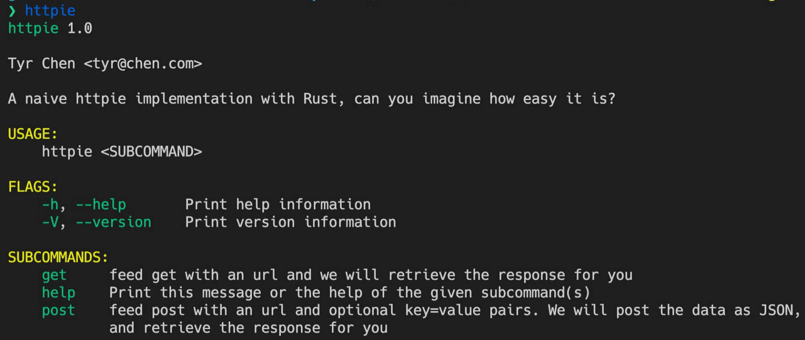
到这里一个带有完整帮助的 HTTPie 就可以投入使用了。
我们测试一下效果：
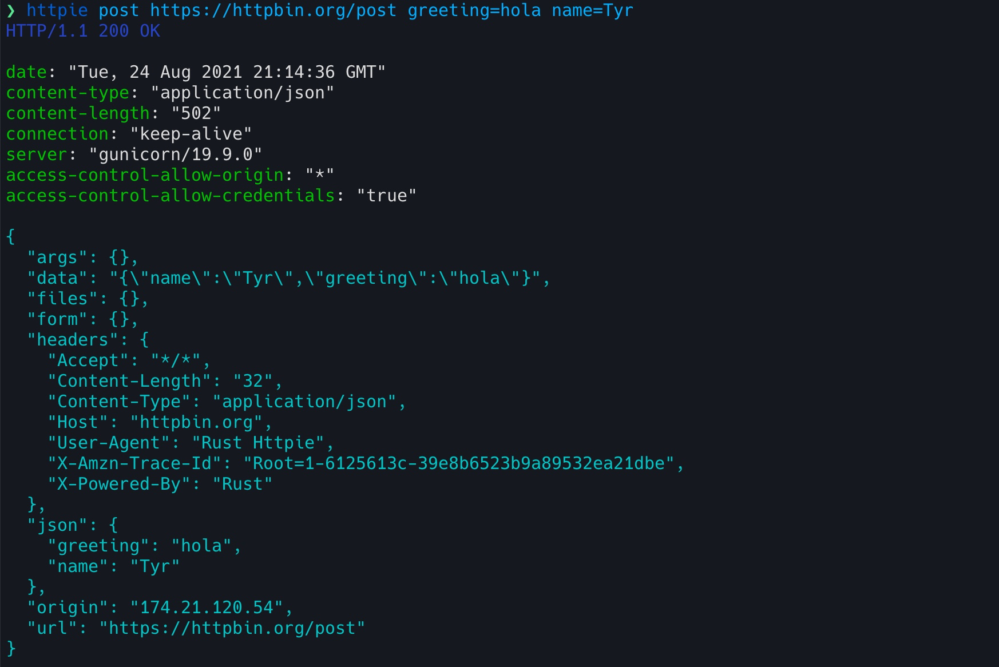
这和官方的 HTTPie 效果几乎一样。
哈，这个例子我们大获成功。我们只用了 100 行代码出头，就实现了 HTTPie 的核心功能，远低于预期的 200 行。不知道你能否从中隐约感受到 Rust 解决实际问题的能力，以今天实现的 HTTPie 为例，
- 要把命令行解析成数据结构，我们只需要在数据结构上，添加一些简单的标注就能搞定。
- 数据的验证，又可以由单独的、和主流程没有任何耦合关系的函数完成。
- 作为 CLI 解析库，clap 的整体体验和 Python 的 click 非常类似，但比 Golang 的 cobra 要更简单。
这就是 Rust 语言的能力体现，明明是面向系统级开发，却能够做出类似 Python 的抽象和体验，所以一旦你适应了 Rust ，用起来就会感觉非常美妙。
小结
现在你应该有点明白，为什么我会在开篇词中会说，Rust 拥有强大的表现力。
或许你还是有点疑惑，这么学，我也太懵了，跟盲人摸象似的。其实初学者都会以为，必须要先搞明白所有的语法知识，才能动手写代码，不是的。
我们这周写三个实用例子的挑战，就是为了让你，在懵懂地撰写代码的过程中，直观感受 Rust 处理问题、解决问题的方式，同时可以跟你熟悉的语言去类比，无论是 Golang / Java，还是 Python / JavaScript，如果我用自己熟悉的语言怎么解决、Rust 给了我什么样的支持、我感觉它还缺什么。
在这个过程中，你脑子里会产生各种深度的思考，这些思考又必然会引发越来越多的问号，这是好事，带着这些问号，在未来的课程中才能更有目的地学习，也一定会学得深刻而有效。
今天的小挑战并不太难，你可能还意犹未尽。别急，下一讲我们会再写个难度大一点的、工作中都会用到的 Web 服务，继续体验 Rust 的魅力。
思考题
我们只是实现了 HTTP header 和 body 的高亮区分，但是 HTTP body 还是有些不太美观，可以进一步做语法高亮，如果你完成了今天的代码，觉得自己学有余力可以再挑战一下，你不妨试一试用 syntect 继续完善我们的 HTTPie。syntect 是 Rust 的一个语法高亮库，非常强大。
05｜get hands dirty：做一个图片服务器有多难？
今天的例子是我们在工作中都会遇到的需求：构建一个 Web Server，对外提供某种服务。类似上一讲的 HTTPie ，我们继续找一个已有的开源工具用 Rust 来重写，但是今天来挑战一个稍大一点的项目：构建一个类似 Thumbor 的图片服务器。
Thumbor
Thumbor 是 Python 下的一个非常著名的图片服务器，被广泛应用在各种需要动态调整图片尺寸的场合里。
它可以通过一个很简单的 HTTP 接口，实现图片的动态剪切和大小调整，另外还支持文件存储、替换处理引擎等其他辅助功能。我在之前的创业项目中还用过它，非常实用，性能也还不错。
我们看它的例子：
http://<thumbor-server>/300x200/smart/thumbor.readthedocs.io/en/latest/_images/logo-thumbor.png
在这个例子里，Thumbor 可以对这个图片最后的 URL 使用 smart crop 剪切，并调整大小为 300x200 的尺寸输出，用户访问这个 URL 会得到一个 300x200 大小的缩略图。
我们今天就来实现它最核心的功能，对图片进行动态转换。你可以想一想，如果用你最熟悉的语言，要实现这个服务，怎么设计，需要用到些什么库，大概用多少行代码？如果用 Rust 的话，又大概会多少行代码？
带着你自己的一些想法，开始用 Rust 构建这个工具吧！目标依旧是，用大约 200 行代码实现我们的需求。
设计分析
既然是图片转换，最基本的肯定是要支持各种各样的转换功能，比如调整大小、剪切、加水印，甚至包括图片的滤镜但是，图片转换服务的难点其实在接口设计上，如何设计一套易用、简洁的接口，让图片服务器未来可以很轻松地扩展。
为什么这么说，你想如果有一天，产品经理来找你，突然想让原本只用来做缩略图的图片服务，支持老照片的滤镜效果，你准备怎么办？
Thumbor 给出的答案是，把要使用的处理方法的接口，按照一定的格式、一定的顺序放在 URL 路径中，不使用的图片处理方法就不放：
/hmac/trim/AxB:CxD/(adaptative-)(full-)fit-in/-Ex-F/HALIGN/VALIGN/smart/filters:FILTERNAME(ARGUMENT):FILTERNAME(ARGUMENT)/*IMAGE-URI*
但这样不容易扩展，解析起来不方便，也很难满足对图片做多个有序操作的要求，比如对某个图片我想先加滤镜再加水印，对另一个图片我想先加水印再加滤镜。
另外，如果未来要加更多的参数，一个不小心，还很可能和已有的参数冲突，或者造成 API 的破坏性更新（breaking change）。作为开发者，我们永远不要低估产品经理那颗什么奇葩想法都有的躁动的心。
所以，在构思这个项目的时候，我们需要找一种更简洁且可扩展的方式，来描述对图片进行的一系列有序操作，比如说：先做 resize，之后对 resize 的结果添加一个水印，最后统一使用一个滤镜。
这样的有序操作，对应到代码中，可以用列表来表述，列表中每个操作可以是一个 enum，像这样：
#![allow(unused)] fn main() { // 解析出来的图片处理的参数 struct ImageSpec { specs: Vec<Spec> } // 每个参数的是我们支持的某种处理方式 enum Spec { Resize(Resize), Crop(Crop), ... } // 处理图片的 resize struct Resize { width: u32, height: u32 } }
现在需要的数据结构有了，刚才分析了 thumbor 使用的方式拓展性不好，那我们如何设计一个任何客户端可以使用的、体现在 URL 上的接口，使其能够解析成我们设计的数据结构呢？
使用 querystring 么？虽然可行，但它在图片处理步骤比较复杂的时候，容易无序增长，比如我们要对某个图片做七八次转换，这个 querystring 就会非常长。
我这里的思路是使用 protobuf。protobuf 可以描述数据结构，几乎所有语言都有对 protobuf 的支持。当用 protobuf 生成一个 image spec 后，我们可以将其序列化成字节流。但字节流无法放在 URL 中，怎么办？我们可以用 base64 转码！
顺着这个思路，来试着写一下描述 image spec 的 protobuf 消息的定义：
message ImageSpec { repeated Spec specs = 1; }
message Spec {
oneof data {
Resize resize = 1;
Crop crop = 2;
...
}
}
...
这样我们就可以在 URL 中，嵌入通过 protobuf 生成的 base64 字符串，来提供可扩展的图片处理参数。处理过的 URL 长这个样子：
http://localhost:3000/image/CgoKCAjYBBCgBiADCgY6BAgUEBQKBDICCAM/<encoded origin url>
CgoKCAjYBBCgBiADCgY6BAgUEBQKBDICCAM 描述了我们上面说的图片的处理流程：先做 resize，之后对 resize 的结果添加一个水印，最后统一使用一个滤镜。它可以用下面的代码实现：
#![allow(unused)] fn main() { fn print_test_url(url: &str) { use std::borrow::Borrow; let spec1 = Spec::new_resize(600, 800, resize::SampleFilter::CatmullRom); let spec2 = Spec::new_watermark(20, 20); let spec3 = Spec::new_filter(filter::Filter::Marine); let image_spec = ImageSpec::new(vec![spec1, spec2, spec3]); let s: String = image_spec.borrow().into(); let test_image = percent_encode(url.as_bytes(), NON_ALPHANUMERIC).to_string(); println!("test url: http://localhost:3000/image/{}/{}", s, test_image); } }
使用 protobuf 的好处是，序列化后的结果比较小巧，而且任何支持 protobuf 的语言都可以生成或者解析这个接口。
好，接口我们敲定好，接下来就是做一个 HTTP 服务器提供这个接口。在 HTTP 服务器对 /image 路由的处理流程里，我们需要从 URL 中获取原始的图片，然后按照 image spec 依次处理，最后把处理完的字节流返回给用户。
在这个流程中，显而易见能够想到的优化是，为原始图片的获取过程，提供一个 LRU（Least Recently Used）缓存，因为访问外部网络是整个路径中最缓慢也最不可控的环节。
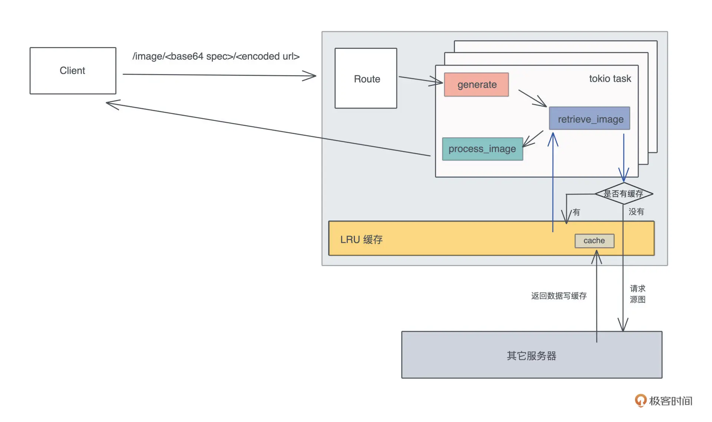
分析完后，是不是感觉 thumbor 也没有什么复杂的？不过你一定会有疑问：200 行代码真的可以完成这么多工作么？我们先写着，完成之后再来统计一下。
protobuf 的定义和编译
这个项目我们需要很多依赖，就不一一介绍了，未来在你的学习、工作中，大部分依赖你都会渐渐遇到和使用到。
我们照样先 “cargo new thumbor” 生成项目，然后在项目的 Cargo.toml 中添加这些依赖：
[dependencies]
axum = "0.2" # web 服务器
anyhow = "1" # 错误处理
base64 = "0.13" # base64 编码/解码
bytes = "1" # 处理字节流
image = "0.23" # 处理图片
lazy_static = "1" # 通过宏更方便地初始化静态变量
lru = "0.6" # LRU 缓存
percent-encoding = "2" # url 编码/解码
photon-rs = "0.3" # 图片效果
prost = "0.8" # protobuf 处理
reqwest = "0.11" # HTTP cliebnt
serde = { version = "1", features = ["derive"] } # 序列化/反序列化数据
tokio = { version = "1", features = ["full"] } # 异步处理
tower = { version = "0.4", features = ["util", "timeout", "load-shed", "limit"] } # 服务处理及中间件
tower-http = { version = "0.1", features = ["add-extension", "compression-full", "trace" ] } # http 中间件
tracing = "0.1" # 日志和追踪
tracing-subscriber = "0.2" # 日志和追踪
[build-dependencies]
prost-build = "0.8" # 编译 protobuf
在项目根目录下，生成一个 abi.proto 文件，写入我们支持的图片处理服务用到的数据结构：
syntax = "proto3";
package abi; // 这个名字会被用作编译结果，prost 会产生：abi.rs
// 一个 ImageSpec 是一个有序的数组，服务器按照 spec 的顺序处理
message ImageSpec { repeated Spec specs = 1; }
// 处理图片改变大小
message Resize {
uint32 width = 1;
uint32 height = 2;
enum ResizeType {
NORMAL = 0;
SEAM_CARVE = 1;
}
ResizeType rtype = 3;
enum SampleFilter {
UNDEFINED = 0;
NEAREST = 1;
TRIANGLE = 2;
CATMULL_ROM = 3;
GAUSSIAN = 4;
LANCZOS3 = 5;
}
SampleFilter filter = 4;
}
// 处理图片截取
message Crop {
uint32 x1 = 1;
uint32 y1 = 2;
uint32 x2 = 3;
uint32 y2 = 4;
}
// 处理水平翻转
message Fliph {}
// 处理垂直翻转
message Flipv {}
// 处理对比度
message Contrast { float contrast = 1; }
// 处理滤镜
message Filter {
enum Filter {
UNSPECIFIED = 0;
OCEANIC = 1;
ISLANDS = 2;
MARINE = 3;
// more: https://docs.rs/photon-rs/0.3.1/photon_rs/filters/fn.filter.html
}
Filter filter = 1;
}
// 处理水印
message Watermark {
uint32 x = 1;
uint32 y = 2;
}
// 一个 spec 可以包含上述的处理方式之一
message Spec {
oneof data {
Resize resize = 1;
Crop crop = 2;
Flipv flipv = 3;
Fliph fliph = 4;
Contrast contrast = 5;
Filter filter = 6;
Watermark watermark = 7;
}
}
这包含了我们支持的图片处理服务，以后可以轻松扩展它来支持更多的操作。
protobuf 是一个向下兼容的工具，所以在服务器不断支持更多功能时，还可以和旧版本的客户端兼容。在 Rust 下，我们可以用 prost 来使用和编译 protobuf。同样，在项目根目录下，创建一个 build.rs，写入以下代码：
fn main() { prost_build::Config::new() .out_dir("src/pb") .compile_protos(&["abi.proto"], &["."]) .unwrap(); }
build.rs 可以在编译 cargo 项目时，做额外的编译处理。这里我们使用 prost_build 把 abi.proto 编译到 src/pb 目录下。
这个目录现在还不存在，你需要 mkdir src/pb 创建它。运行 cargo build，你会发现在 src/pb 下，有一个 abi.rs 文件被生成出来，这个文件包含了从 protobuf 消息转换出来的 Rust 数据结构。我们先不用管 prost 额外添加的各种标记宏，就把它们当成普通的数据结构使用即可。
接下来，我们创建 src/pb/mod.rs，第三讲说过，一个目录下的所有代码，可以通过 mod.rs 声明。在这个文件中，我们引入 abi.rs，并且撰写一些辅助函数。这些辅助函数主要是为了，让 ImageSpec 可以被方便地转换成字符串，或者从字符串中恢复。
另外，我们还写了一个测试确保功能的正确性，你可以 cargo test 测试一下。记得在 main.rs 里添加 mod pb; 引入这个模块。
#![allow(unused)] fn main() { use base64::{decode_config, encode_config, URL_SAFE_NO_PAD}; use photon_rs::transform ::SamplingFilter; use prost::Message; use std::convert::TryFrom; mod abi; // 声明 abi.rs pub use abi::*; impl ImageSpec { pub fn new(specs: Vec<Spec>) -> Self { Self { specs } } } // 让 ImageSpec 可以生成一个字符串 impl From<&ImageSpec> for String { fn from(image_spec: &ImageSpec) -> Self { let data = image_spec.encode_to_vec(); encode_config(data, URL_SAFE_NO_PAD) } } // 让 ImageSpec 可以通过一个字符串创建。比如 s.parse().unwrap() impl TryFrom<&str> for ImageSpec { type Error = anyhow::Error; fn try_from(value: &str) -> Result<Self, Self::Error> { let data = decode_config(value, URL_SAFE_NO_PAD)?; Ok(ImageSpec::decode(&data[..])?) } } // 辅助函数，photon_rs 相应的方法里需要字符串 impl filter::Filter { pub fn to_str(&self) -> Option<&'static str> { match self { filter::Filter::Unspecified => None, filter::Filter::Oceanic => Some("oceanic"), filter::Filter::Islands => Some("islands"), filter::Filter::Marine => Some("marine"), } } } // 在我们定义的 SampleFilter 和 photon_rs 的 SamplingFilter 间转换 impl From<resize::SampleFilter> for SamplingFilter { fn from(v: resize::SampleFilter) -> Self { match v { resize::SampleFilter::Undefined => SamplingFilter::Nearest, resize::SampleFilter::Nearest => SamplingFilter::Nearest, resize::SampleFilter::Triangle => SamplingFilter::Triangle, resize::SampleFilter::CatmullRom => SamplingFilter::CatmullRom, resize::SampleFilter::Gaussian => SamplingFilter::Gaussian, resize::SampleFilter::Lanczos3 => SamplingFilter::Lanczos3, } } } // 提供一些辅助函数，让创建一个 spec 的过程简单一些 impl Spec { pub fn new_resize_seam_carve(width: u32, height: u32) -> Self { Self { data: Some(spec::Data::Resize(Resize { width, height, rtype: resize::ResizeType::SeamCarve as i32, filter: resize::SampleFilter::Undefined as i32, })), } } pub fn new_resize(width: u32, height: u32, filter: resize::SampleFilter) -> Self { Self { data: Some(spec::Data::Resize(Resize { width, height, rtype: resize::ResizeType::Normal as i32, filter: filter as i32, })), } } pub fn new_filter(filter: filter::Filter) -> Self { Self { data: Some(spec::Data::Filter(Filter { filter: filter as i32, })), } } pub fn new_watermark(x: u32, y: u32) -> Self { Self { data: Some(spec::Data::Watermark(Watermark { x, y })), } } } #[cfg(test)] mod tests { use super::*; use std::borrow::Borrow; use std::convert::TryInto; #[test] fn encoded_spec_could_be_decoded() { let spec1 = Spec::new_resize(600, 600, resize::SampleFilter::CatmullRom); let spec2 = Spec::new_filter(filter::Filter::Marine); let image_spec = ImageSpec::new(vec![spec1, spec2]); let s: String = image_spec.borrow().into(); assert_eq!(image_spec, s.as_str().try_into().unwrap()); } } }
引入 HTTP 服务器
处理完和 protobuf 相关的内容，我们来处理 HTTP 服务的流程。Rust 社区有很多高性能的 Web 服务器，比如 actix-web 、rocket 、warp ，以及最近新出的 axum。我们就来用新鲜出炉的 axum 做这个服务器。
根据 axum 的文档，我们可以构建出下面的代码：
use axum::{extract::Path, handler::get, http::StatusCode, Router}; use percent_encoding::percent_decode_str; use serde::Deserialize; use std::convert::TryInto; // 引入 protobuf 生成的代码，我们暂且不用太关心他们 mod pb; use pb::*; // 参数使用 serde 做 Deserialize，axum 会自动识别并解析 #[derive(Deserialize)] struct Params { spec: String, url: String, } #[tokio::main] async fn main() { // 初始化 tracing tracing_subscriber::fmt::init(); // 构建路由 let app = Router::new() // `GET /image` 会执行 generate 函数，并把 spec 和 url 传递过去 .route("/image/:spec/:url", get(generate)); // 运行 web 服务器 let addr = "127.0.0.1:3000".parse().unwrap(); tracing::debug!("listening on {}", addr); axum::Server::bind(&addr) .serve(app.into_make_service()) .await .unwrap(); } // 目前我们就只把参数解析出来 async fn generate(Path(Params { spec, url }): Path<Params>) -> Result<String, StatusCode> { let url = percent_decode_str(&url).decode_utf8_lossy(); let spec: ImageSpec = spec .as_str() .try_into() .map_err(|_| StatusCode::BAD_REQUEST)?; Ok(format!("url: {}\n spec: {:#?}", url, spec)) }
把它们添加到 main.rs 后，使用 cargo run 运行服务器。然后我们就可以用上一讲做的 HTTPie 测试（eat your own dog food）：
httpie get "http://localhost:3000/image/CgoKCAjYBBCgBiADCgY6BAgUEBQKBDICCAM/https%3A%2F%2Fimages%2Epexels%2Ecom%2Fphotos%2F2470905%2Fpexels%2Dphoto%2D2470905%2Ejpeg%3Fauto%3Dcompress%26cs%3Dtinysrgb%26dpr%3D2%26h%3D750%26w%3D1260"
HTTP/1.1 200 OK
content-type: "text/plain"
content-length: "901"
date: "Wed, 25 Aug 2021 18:03:50 GMT"
url: https://images.pexels.com/photos/2470905/pexels-photo-2470905.jpeg?auto=compress&cs=tinysrgb&dpr=2&h=750&w=1260
spec: ImageSpec {
specs: [
Spec {
data: Some(
Resize(
Resize {
width: 600,
height: 800,
rtype: Normal,
filter: CatmullRom,
},
),
),
},
Spec {
data: Some(
Watermark(
Watermark {
x: 20,
y: 20,
},
),
),
},
Spec {
data: Some(
Filter(
Filter {
filter: Marine,
},
),
),
},
],
Wow，Web 服务器的接口部分我们已经能够正确处理了。
写到这里，如果出现的语法让你觉得迷茫，不要担心。因为我们还没有讲所有权、类型系统、泛型等内容，所以很多细节你会看不懂。今天这个例子，你只要跟我的思路走，了解整个处理流程就可以了。
获取源图并缓存
好，当接口已经可以工作之后，我们再来处理获取源图的逻辑。
根据之前的设计，需要引入 LRU cache 来缓存源图。一般 Web 框架都会有中间件来处理全局的状态，axum 也不例外，可以使用 AddExtensionLayer 添加一个全局的状态，这个状态目前就是 LRU cache，在内存中缓存网络请求获得的源图。
我们把 main.rs 的代码，改成下面的代码：
use anyhow::Result; use axum::{ extract::{Extension, Path}, handler::get, http::{HeaderMap, HeaderValue, StatusCode}, AddExtensionLayer, Router, }; use bytes::Bytes; use lru::LruCache; use percent_encoding::{percent_decode_str, percent_encode, NON_ALPHANUMERIC}; use serde::Deserialize; use std::{ collections::hash_map::DefaultHasher, convert::TryInto, hash::{Hash, Hasher}, sync::Arc, }; use tokio::sync::Mutex; use tower::ServiceBuilder; use tracing::{info, instrument}; mod pb; use pb::*; #[derive(Deserialize)] struct Params { spec: String, url: String, } type Cache = Arc<Mutex<LruCache<u64, Bytes>>>; #[tokio::main] async fn main() { // 初始化 tracing tracing_subscriber::fmt::init(); let cache: Cache = Arc::new(Mutex::new(LruCache::new(1024))); // 构建路由 let app = Router::new() // `GET /` 会执行 .route("/image/:spec/:url", get(generate)) .layer( ServiceBuilder::new() .layer(AddExtensionLayer::new(cache)) .into_inner(), ); // 运行 web 服务器 let addr = "127.0.0.1:3000".parse().unwrap(); print_test_url("https://images.pexels.com/photos/1562477/pexels-photo-1562477.jpeg?auto=compress&cs=tinysrgb&dpr=3&h=750&w=1260"); info!("Listening on {}", addr); axum::Server::bind(&addr) .serve(app.into_make_service()) .await .unwrap(); } async fn generate( Path(Params { spec, url }): Path<Params>, Extension(cache): Extension<Cache>, ) -> Result<(HeaderMap, Vec<u8>), StatusCode> { let spec: ImageSpec = spec .as_str() .try_into() .map_err(|_| StatusCode::BAD_REQUEST)?; let url: &str = &percent_decode_str(&url).decode_utf8_lossy(); let data = retrieve_image(&url, cache) .await .map_err(|_| StatusCode::BAD_REQUEST)?; // TODO: 处理图片 let mut headers = HeaderMap::new(); headers.insert("content-type", HeaderValue::from_static("image/jpeg")); Ok((headers, data.to_vec())) } #[instrument(level = "info", skip(cache))] async fn retrieve_image(url: &str, cache: Cache) -> Result<Bytes> { let mut hasher = DefaultHasher::new(); url.hash(&mut hasher); let key = hasher.finish(); let g = &mut cache.lock().await; let data = match g.get(&key) { Some(v) => { info!("Match cache {}", key); v.to_owned() } None => { info!("Retrieve url"); let resp = reqwest::get(url).await?; let data = resp.bytes().await?; g.put(key, data.clone()); data } }; Ok(data) } // 调试辅助函数 fn print_test_url(url: &str) { use std::borrow::Borrow; let spec1 = Spec::new_resize(500, 800, resize::SampleFilter::CatmullRom); let spec2 = Spec::new_watermark(20, 20); let spec3 = Spec::new_filter(filter::Filter::Marine); let image_spec = ImageSpec::new(vec![spec1, spec2, spec3]); let s: String = image_spec.borrow().into(); let test_image = percent_encode(url.as_bytes(), NON_ALPHANUMERIC).to_string(); println!("test url: http://localhost:3000/image/{}/{}", s, test_image); }
这段代码看起来多，其实主要就是添加了 retrieve_image 这个函数。对于图片的网络请求，我们先把 URL 做个哈希，在 LRU 缓存中查找，找不到才用 reqwest 发送请求。
你可以 cargo run 运行一下现在的代码：
❯ RUST_LOG=info cargo run --quiet
test url: http://localhost:3000/image/CgoKCAj0AxCgBiADCgY6BAgUEBQKBDICCAM/https%3A%2F%2Fimages%2Epexels%2Ecom%2Fphotos%2F1562477%2Fpexels%2Dphoto%2D1562477%2Ejpeg%3Fauto%3Dcompress%26cs%3Dtinysrgb%26dpr%3D3%26h%3D750%26w%3D1260
Aug 26 16:43:45.747 INFO server2: Listening on 127.0.0.1:3000
为了测试方便，我放了个辅助函数可以生成一个测试 URL，在浏览器中打开后会得到一个和源图一模一样的图片。这就说明，网络处理的部分，我们就搞定了。
图片处理
接下来，我们就可以处理图片了。Rust 下有一个不错的、偏底层的 image 库，围绕它有很多上层的库，包括我们今天要使用 photon_rs。
我扫了一下它的源代码，感觉它不算一个特别优秀的库，内部有太多无谓的内存拷贝，所以性能还有不少提升空间。就算如此，从 photon_rs 自己的 benchmark 看，也比 PIL / ImageMagick 性能好太多，这也算是 Rust 性能强大的一个小小佐证吧。
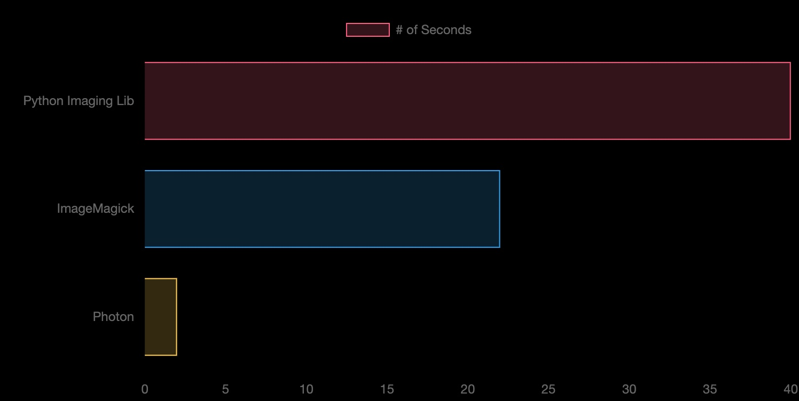
因为 photo_rs 使用简单，这里我们也不太关心更高的性能，就暂且用它。然而，作为一个有追求的开发者，我们知道，有朝一日可能要用不同的 image 引擎替换它，所以我们设计一个 Engine trait：
#![allow(unused)] fn main() { // Engine trait：未来可以添加更多的 engine，主流程只需要替换 engine pub trait Engine { // 对 engine 按照 specs 进行一系列有序的处理 fn apply(&mut self, specs: &[Spec]); // 从 engine 中生成目标图片，注意这里用的是 self，而非 self 的引用 fn generate(self, format: ImageOutputFormat) -> Vec<u8>; } }
它提供两个方法，apply 方法对 engine 按照 specs 进行一系列有序的处理，generate 方法从 engine 中生成目标图片。
那么 apply 方法怎么实现呢？我们可以再设计一个 trait，这样可以为每个 Spec 生成对应处理：
#![allow(unused)] fn main() { // SpecTransform：未来如果添加更多的 spec，只需要实现它即可 pub trait SpecTransform<T> { // 对图片使用 op 做 transform fn transform(&mut self, op: T); } }
好，有了这个思路，我们创建 src/engine 目录，并添加 src/engine/mod.rs，在这个文件里添加对 trait 的定义：
#![allow(unused)] fn main() { use crate::pb::Spec; use image::ImageOutputFormat; mod photon; pub use photon::Photon; // Engine trait：未来可以添加更多的 engine，主流程只需要替换 engine pub trait Engine { // 对 engine 按照 specs 进行一系列有序的处理 fn apply(&mut self, specs: &[Spec]); // 从 engine 中生成目标图片，注意这里用的是 self，而非 self 的引用 fn generate(self, format: ImageOutputFormat) -> Vec<u8>; } // SpecTransform：未来如果添加更多的 spec，只需要实现它即可 pub trait SpecTransform<T> { // 对图片使用 op 做 transform fn transform(&mut self, op: T); } }
接下来我们再生成一个文件 src/engine/photon.rs，对 photon 实现 Engine trait，这个文件主要是一些功能的实现细节，就不详述了，你可以看注释。
#![allow(unused)] fn main() { use super::{Engine, SpecTransform}; use crate::pb::*; use anyhow::Result; use bytes::Bytes; use image::{DynamicImage, ImageBuffer, ImageOutputFormat}; use lazy_static::lazy_static; use photon_rs::{ effects, filters, multiple, native::open_image_from_bytes, transform, PhotonImage, }; use std::convert::TryFrom; lazy_static! { // 预先把水印文件加载为静态变量 static ref WATERMARK: PhotonImage = { // 这里你需要把我 github 项目下的对应图片拷贝到你的根目录 // 在编译的时候 include_bytes! 宏会直接把文件读入编译后的二进制 let data = include_bytes!("../../rust-logo.png"); let watermark = open_image_from_bytes(data).unwrap(); transform::resize(&watermark, 64, 64, transform::SamplingFilter::Nearest) }; } // 我们目前支持 Photon engine pub struct Photon(PhotonImage); // 从 Bytes 转换成 Photon 结构 impl TryFrom<Bytes> for Photon { type Error = anyhow::Error; fn try_from(data: Bytes) -> Result<Self, Self::Error> { Ok(Self(open_image_from_bytes(&data)?)) } } impl Engine for Photon { fn apply(&mut self, specs: &[Spec]) { for spec in specs.iter() { match spec.data { Some(spec::Data::Crop(ref v)) => self.transform(v), Some(spec::Data::Contrast(ref v)) => self.transform(v), Some(spec::Data::Filter(ref v)) => self.transform(v), Some(spec::Data::Fliph(ref v)) => self.transform(v), Some(spec::Data::Flipv(ref v)) => self.transform(v), Some(spec::Data::Resize(ref v)) => self.transform(v), Some(spec::Data::Watermark(ref v)) => self.transform(v), // 对于目前不认识的 spec，不做任何处理 _ => {} } } } fn generate(self, format: ImageOutputFormat) -> Vec<u8> { image_to_buf(self.0, format) } } impl SpecTransform<&Crop> for Photon { fn transform(&mut self, op: &Crop) { let img = transform::crop(&mut self.0, op.x1, op.y1, op.x2, op.y2); self.0 = img; } } impl SpecTransform<&Contrast> for Photon { fn transform(&mut self, op: &Contrast) { effects::adjust_contrast(&mut self.0, op.contrast); } } impl SpecTransform<&Flipv> for Photon { fn transform(&mut self, _op: &Flipv) { transform::flipv(&mut self.0) } } impl SpecTransform<&Fliph> for Photon { fn transform(&mut self, _op: &Fliph) { transform::fliph(&mut self.0) } } impl SpecTransform<&Filter> for Photon { fn transform(&mut self, op: &Filter) { match filter::Filter::from_i32(op.filter) { Some(filter::Filter::Unspecified) => {} Some(f) => filters::filter(&mut self.0, f.to_str().unwrap()), _ => {} } } } impl SpecTransform<&Resize> for Photon { fn transform(&mut self, op: &Resize) { let img = match resize::ResizeType::from_i32(op.rtype).unwrap() { resize::ResizeType::Normal => transform::resize( &mut self.0, op.width, op.height, resize::SampleFilter::from_i32(op.filter).unwrap().into(), ), resize::ResizeType::SeamCarve => { transform::seam_carve(&mut self.0, op.width, op.height) } }; self.0 = img; } } impl SpecTransform<&Watermark> for Photon { fn transform(&mut self, op: &Watermark) { multiple::watermark(&mut self.0, &WATERMARK, op.x, op.y); } } // photon 库竟然没有提供在内存中对图片转换格式的方法，只好手工实现 fn image_to_buf(img: PhotonImage, format: ImageOutputFormat) -> Vec<u8> { let raw_pixels = img.get_raw_pixels(); let width = img.get_width(); let height = img.get_height(); let img_buffer = ImageBuffer::from_vec(width, height, raw_pixels).unwrap(); let dynimage = DynamicImage::ImageRgba8(img_buffer); let mut buffer = Vec::with_capacity(32768); dynimage.write_to(&mut buffer, format).unwrap(); buffer } }
好，图片处理引擎就搞定了。这里用了一个水印图片，你可以去 GitHub repo 下载，然后放在项目根目录下。我们同样把 engine 模块加入 main.rs，并引入 Photon：
#![allow(unused)] fn main() { mod engine; use engine::{Engine, Photon}; use image::ImageOutputFormat; }
还记得 src/main.rs 的代码中，我们留了一个 TODO 么？
#![allow(unused)] fn main() { // TODO: 处理图片 let mut headers = HeaderMap::new(); headers.insert("content-type", HeaderValue::from_static("image/jpeg")); Ok((headers, data.to_vec())) }
我们把这段替换掉，使用刚才写好的 Photon 引擎处理：
#![allow(unused)] fn main() { // 使用 image engine 处理 let mut engine: Photon = data .try_into() .map_err(|_| StatusCode::INTERNAL_SERVER_ERROR)?; engine.apply(&spec.specs); let image = engine.generate(ImageOutputFormat::Jpeg(85)); info!("Finished processing: image size {}", image.len()); let mut headers = HeaderMap::new(); headers.insert("content-type", HeaderValue::from_static("image/jpeg")); Ok((headers, image)) }
这样整个服务器的全部流程就完成了。
我在网上随手找了一张图片来测试下效果。用 cargo build --release 编译 thumbor 项目，然后打开日志运行：
#![allow(unused)] fn main() { RUST_LOG=info target/release/thumbor }
打开测试链接，在浏览器中可以看到左下角的处理后图片。
成功了！这就是我们的 Thumbor 服务根据用户的请求缩小到 500x800、加了水印和 Marine 滤镜后的效果。
从日志看，第一次请求时因为没有缓存，需要请求源图，所以总共花了 400ms；如果你再刷新一下，后续对同一图片的请求，会命中缓存，花了大概 200ms。
Aug 25 15:09:28.035 INFO thumbor: Listening on 127.0.0.1:3000
Aug 25 15:09:30.523 INFO retrieve_image{url="<https://images.pexels.com/photos/1562477/pexels-photo-1562477.jpeg?auto=compress&cs=tinysrgb&dpr=3&h=750&w=1260>"}: thumbor: Retrieve url
Aug 25 15:09:30.950 INFO thumbor: Finished processing: image size 52674
Aug 25 15:09:35.037 INFO retrieve_image{url="<https://images.pexels.com/photos/1562477/pexels-photo-1562477.jpeg?auto=compress&cs=tinysrgb&dpr=3&h=750&w=1260>"}: thumbor: Match cache 13782279907884137652
Aug 25 15:09:35.254 INFO thumbor: Finished processing: image size 52674
这个版本目前是一个没有详细优化过的版本，性能已经足够好。而且，像 Thumbor 这样的图片服务，前面还有 CDN（Content Distribution Network）扛压力，只有 CDN 需要回源时，才会访问到，所以也可以不用太优化。
最后来看看目标完成得如何。如果不算 protobuf 生成的代码，Thumbor 这个项目，到目前为止我们写了 324 行代码：
❯ tokei src/main.rs src/engine/* src/pb/mod.rs
-------------------------------------------------------------------------------
Language Files Lines Code Comments Blanks
-------------------------------------------------------------------------------
Rust 4 394 324 22 48
-------------------------------------------------------------------------------
Total 4 394 324 22 48
-------------------------------------------------------------------------------
三百多行代码就把一个图片服务器的核心部分搞定了，不仅如此，还充分考虑到了架构的可扩展性，用 trait 实现了主要的图片处理流程，并且引入了缓存来避免不必要的网络请求。虽然比我们预期的 200 行代码多了 50% 的代码量，但我相信它进一步佐证了 Rust 强大的表达能力。
而且，通过合理使用 protobuf 定义接口和使用 trait 做图片引擎，未来添加新的功能非常简单，可以像搭积木一样垒上去，不会影响已有的功能，完全符合开闭原则（Open-Closed Principle）。
作为一门系统级语言，Rust 使用独特的内存管理方案，零成本地帮我们管理内存；作为一门高级语言，Rust 提供了足够强大的类型系统和足够完善的标准库，帮我们很容易写出低耦合、高内聚的代码。
小结
今天讲的 Thumbor 要比上一讲的 HTTPie 难度高一个数量级，所以细节理解不了不打紧，但我相信你会进一步被 Rust 强大的表现力、抽象能力和解决实际问题的能力折服。
比如说，我们通过 Engine trait 分离了具体的图片处理引擎和主流程，让主流程变得干净清爽；同时在处理 protobuf 生成的数据结构时，大量使用了 From/ TryFromtrait 做数据类型的转换，也是一种解耦（关注点分离）的思路。
听我讲得这么流畅，你是不是觉得我写的时候肯定不会犯错。其实并没有，我在用 axum 写源图获取的流程时，就因为使用 Mutex 的错误而被编译器毒打，花了些时间才解决。
但这种毒打是非常让人心悦诚服且快乐的，因为我知道，这样的并发问题一旦泄露到生产环境，解决起来大概率会毫无头绪，只能一点点试错可能有问题的代码，那个时候代价就远非和编译器搏斗的这十来分钟可比了。
所以只要你入了门，写 Rust 代码的过程绝对是一种享受，绝大多数错误在编译时就被揪出来了，你的代码只要编译能通过，基本上不需要担心它运行时的正确性。
也正是因为这样，在前期学习 Rust 的时候编译很难通过，导致我们直观感觉它是一门难学的语言，但其实它又很容易上手。这听起来矛盾，但确实是我自己的感受：它之所以学起来有些费力，有点像讲拉丁语系的人学习中文一样，要打破很多自己原有的认知，去拥抱新的思想和概念。但是只要多写多思考，时间长了，理解起来就是水到渠成的事。
思考题
之前提到通过合理使用 protobuf 定义接口和使用 trait 做图片引擎，未来添加新的功能非常简单。如果你学有余力，可以自己尝试一下。
我们看如何添加新功能：
- 首先添加新的 proto，定义新的 spec
- 然后为 spec 实现 SpecTransform trait 和一些辅助函数
- 最后在 Engine 中使用 spec
如果要换图片引擎呢？也很简单：
- 添加新的图片引擎，像 Photon 那样，实现 Engine trait 以及为每种 spec 实现 SpecTransform Trait。
- 在 main.rs 里使用新的引擎。